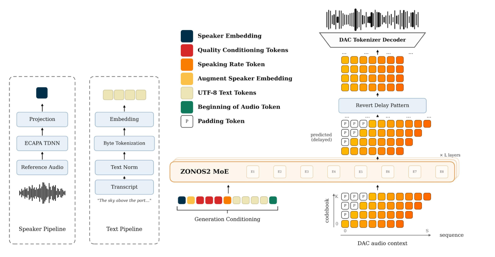
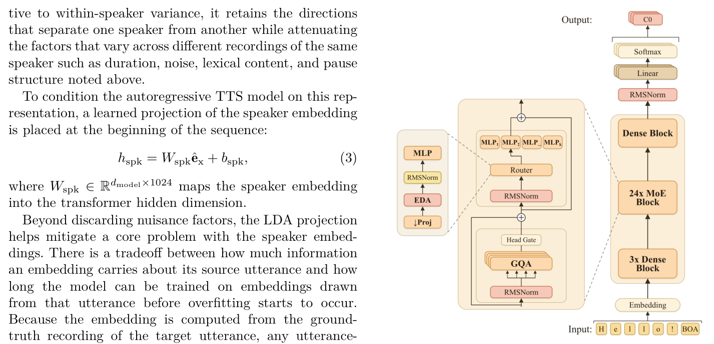
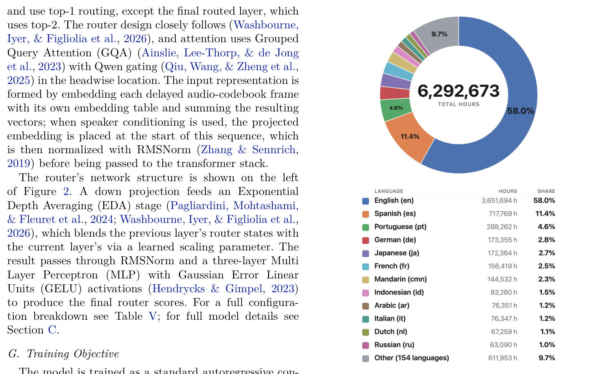
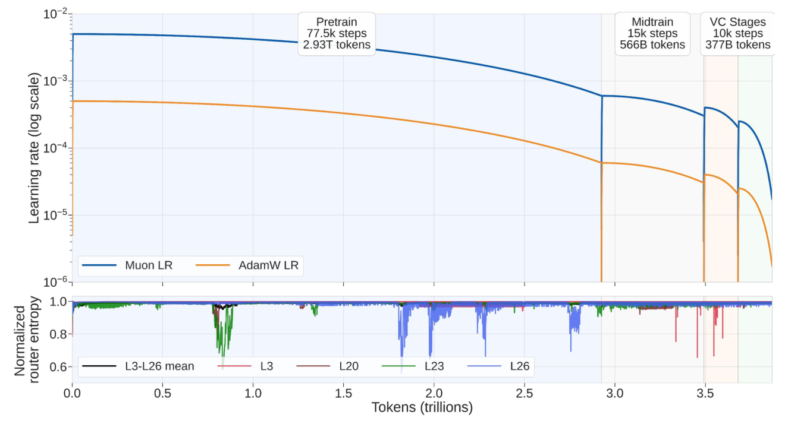
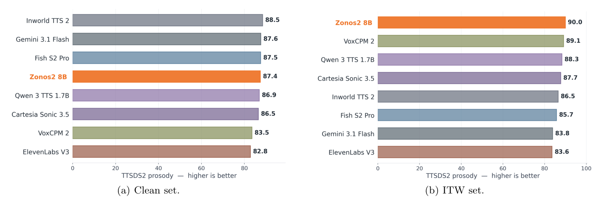
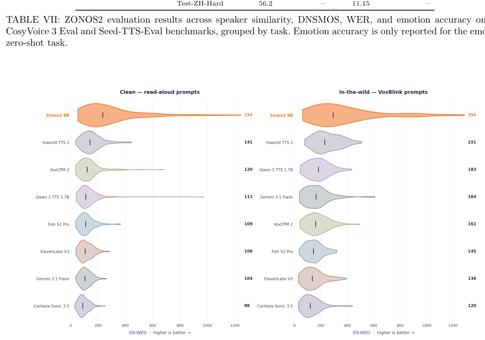
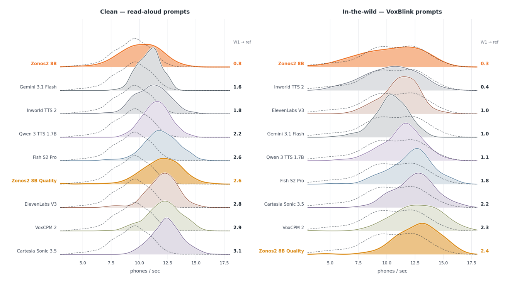

Gabriel Clark*, Sofian Mejjoute, Mohamed Osman, George Close, Beren Millidge*
ZyphraZyphra
San Francisco, CA *Corresponding authors: gabriel@zyphra.com, beren@zyphra.com
美国加州旧金山。*通讯作者：gabriel@zyphra.com、beren@zyphra.com。
摘要Abstract
We present ZONOS2 8B, our latest Text
我们发布 ZONOS2 8B，这是我们最新的文本转语音
To Speech (TTS) model, which achieves state-of-theart naturalness, prosody, and voice cloning fidelity. We improve upon Zonos-v0.1 in scale, data, and training recipe. We scale the model from 1.6B to 8B total parameters (900M active) with a novel mixture-ofexperts (MoE) backbone, improving inference latency and throughput. We expand our training corpus from 200K to over 6M hours using a new data processing pipeline, and we simplify our post-training and conditioning recipes to improve naturalness and voice cloning fidelity. We evaluate ZONOS2 8B on quality, speaker similarity, WER, and ZTTS1-Eval, our novel TTS benchmark, where it performs competitively with state-of-the-art systems while maintaining good streaming latency. We release our model weights and example inference code under an Apache 2.0 license on GitHub∗and Hugging Face†, as well as the ZTTS1-Eval benchmark‡.
（TTS）模型，在自然度、韵律和声音克隆保真度上达到业界领先水平。相比 Zonos-v0.1，我们在规模、数据和训练配方上做了改进。我们用一种新颖的混合专家（MoE）主干，将模型从 1.6B 扩展到 8B 总参数（900M 激活参数），改善了推理延迟与吞吐。借助新的数据处理管线，我们把训练语料从 200K 小时扩展到 6M 小时以上，并简化了后训练与条件化配方，以提升自然度和声音克隆保真度。我们在质量、说话人相似度、WER 以及我们提出的新 TTS 基准 ZTTS1-Eval 上评估了 ZONOS2 8B；它在保持流式延迟良好的同时，与业界领先系统表现相当。我们以 Apache 2.0 许可证在 GitHub 和 Hugging Face 上开源了模型权重与示例推理代码，并同步发布了 ZTTS1-Eval 基准。
I 引言Introduction
The core quality measures of a TTS system are generation stability, naturalness, controllability, multilinguality, and inference performance. Recent works in this domain tend to focus on one of these properties to the detriment of the others. For instance, some systems produce highquality output but offer limited control, while inferenceefficient systems support only one or a few languages. With ZONOS2, our aim is to design a TTS system that is strong in every aspect, focusing especially on naturalness and voice cloning fidelity.
一个 TTS 系统的核心质量指标包括生成稳定性、自然度、可控性、多语种能力和推理性能。该领域的近期工作往往只聚焦其中某一项，而牺牲了其余指标。例如，有的系统输出质量高但可控性有限，而推理高效的系统又只支持一种或少数几种语言。ZONOS2 的目标是设计一个在各个方面都强的 TTS 系统，尤其聚焦自然度和声音克隆保真度。
The ZONOS2 architecture uses a decoder-only transformer backbone which takes text and audio tokens as input and outputs audio tokens, where the audio tokens are represented using a Residual Vector Quantization (RVQ)-based audio codec. Our architectural novelty stems from introducing Mixture of Experts (MoE) architectures into open-source TTS, which we use to scale the model’s parameter count and capability while maintaining inference speeds necessary for real-time audio streaming. We combine architecture advancements from recent LLMs, including the ZAYA1-8B (Washbourne, Iyer, & Figliolia et al., 2026) router design. To maximize the quality of the generated audio, a high fidelity and high sample ∗https://github.com/Zyphra/ZONOS2/ †https://huggingface.co/Zyphra/ZONOS2 ‡https://github.com/Zyphra/ZTTS1-Eval rate codec (Kumar, Seetharaman, & Luebs et al., 2023) Descript Audio Codec (DAC) is used. To provide controllability, we implement several user-facing conditioning options, including high accuracy voice cloning from prompt audio, speaking-rate selection, and an optional ‘Quality Mode’. Our voice cloning approach is zero-shot, does not require speaker labels during pretraining, supports unbounded speaker utterance lengths, and does not require transcription of the clone target audio at inference time.
ZONOS2 架构采用 decoder-only 的 Transformer 主干，输入文本与音频 token、输出音频 token，其中音频 token 由基于残差向量量化（RVQ）的音频 codec 表示。我们的架构创新在于将混合专家（MoE）架构引入开源 TTS，用它扩大模型参数量与能力，同时维持实时音频流式合成所需的推理速度。我们吸收了近期 LLM 的架构进展，包括 ZAYA1-8B（Washbourne, Iyer, & Figliolia et al., 2026）的路由器设计。为最大化生成音频的质量，我们采用高保真、高采样率的 codec（Kumar, Seetharaman, & Luebs et al., 2023），即 Descript Audio Codec（DAC）。（原文此处混入三个脚注链接，如实保留：∗https://github.com/Zyphra/ZONOS2/ †https://huggingface.co/Zyphra/ZONOS2 ‡https://github.com/Zyphra/ZTTS1-Eval）为提供可控性，我们实现了若干面向用户的条件化选项，包括基于提示音频的高精度声音克隆、语速选择，以及一个可选的「质量模式」（Quality Mode）。我们的声音克隆方法是零样本的：预训练时不需要说话人标签，支持不限长度的说话人音频，推理时也不需要克隆目标音频的转写文本。
For seamless multilingual performance and robustness to phonemization errors, we adopt raw byte tokenization for the text input. We increased the linguistic diversity of our training set, focusing heavily on broadening support for European and Asian languages. To achieve low latency, we use a delay pattern (Copet, Kreuk, & Gat et al., 2024) approach to codebook generation which generates multiple codebook tokens in parallel by overlapping the generation of different codebooks of different timesteps. Moreover, our MoE architecture significantly improves inference latency due to its small forward pass footprint.
为了实现无缝的多语种表现并对音素化错误保持鲁棒，文本输入采用原始字节级分词。我们提升了训练集的语言多样性，重点扩大对欧洲和亚洲语言的支持。为降低延迟，我们采用延迟模式（delay pattern）（Copet, Kreuk, & Gat et al., 2024）来生成码本：把不同时间步的不同码本的生成重叠起来，从而并行生成多个码本 token。此外，由于前向计算占用小，我们的 MoE 架构显著改善了推理延迟。
Finally, motivated by the limitations of existing TTS evaluation benchmarks, we also introduce a new benchmark, ZTTS1-Eval. The most widely adopted TTS benchmark, Seed-TTS-Eval (Anastassiou, Chen, & Chen et al., 2024), covers only English and Chinese, scores intelligibility and speaker similarity with now-dated models, and uses only read speech. Later efforts such as CV3- Eval (Du, Gao, & Wang et al., 2025) broaden language and task coverage but keep the same scoring stack and a largely prepared-speech setting. As modern systems now approach human intelligibility, Word Error Rate (WER) alone no longer separates the strongest systems, and no widely used zero-shot benchmark measures whether generated speech reproduces the prosody of real speech. ZTTS1-Eval addresses this. It pairs a clean read-speech set of 9 languages with an in-the-wild spontaneous set of 17 languages, scores content, speaker, and quality with current models (Qwen3-ASR (Shi, Wang, & Guo et al., 2026), ReDimNet (Yakovlev, Makarov, & Balykin et al., 2024), and MSR-UTMOS (Nishikawa, Nakata, & Saito et al., 2025)), and adds a distributional prosody and generation-diversity layer (TTSDS2 (Minixhofer, Klejch & Bell, 2025) and Discretized Speech Weighted Edit Distance (DS-WED) (Yang, Han, & Wang et al., 2026)). We
最后，受现有 TTS 评测基准局限性的驱使，我们还提出了一个新基准 ZTTS1-Eval。目前采用最广的 TTS 基准 Seed-TTS-Eval（Anastassiou, Chen, & Chen et al., 2024）只覆盖英语和中文，用已经过时的模型来评估可懂度与说话人相似度，而且只使用朗读语音。后续工作如 CV3-Eval（Du, Gao, & Wang et al., 2025）虽然拓宽了语言与任务覆盖，但仍沿用同一套评分栈，且大体上仍以有准备的朗读语音为主。随着现代系统的可懂度逼近人类，单凭词错误率（WER）已无法区分最强的系统，而常用的零样本基准中，没有一个能衡量生成语音是否复现了真实语音的韵律。ZTTS1-Eval 正是为解决这一问题而生。它将一个覆盖 9 种语言的干净朗读语音集与一个覆盖 17 种语言的野外自发语音集配对，用当前较新的模型为内容、说话人与质量打分（Qwen3-ASR（Shi, Wang, & Guo et al., 2026）、ReDimNet（Yakovlev, Makarov, & Balykin et al., 2024）与 MSR-UTMOS（Nishikawa, Nakata, & Saito et al., 2025）），并增加了分布式的韵律与生成多样性维度（TTSDS2（Minixhofer, Klejch & Bell, 2025）与离散语音加权编辑距离 DS-WED（Yang, Han, & Wang et al., 2026））。我们

图Fig. 1: Overview of ZONOS2 inference pipeline, showing the text and conditioning inputs as well as the delay pattern approach to audio codec token generation.
图 1：ZONOS2 推理管线概览，展示文本与条件化输入，以及音频 codec token 生成所采用的延迟模式。
describe the full details of our ZTTS1-Eval benchmark in Section V.
在第五节介绍 ZTTS1-Eval 基准的全部细节。
Overall, our key contributions are:
总体而言，我们的主要贡献如下：
• We release ZONOS2, an open-source, permissively licensed TTS model with high-fidelity natural-sounding voice cloning.
我们发布 ZONOS2——一个采用宽松许可证开源、具有高保真自然声音克隆能力的 TTS 模型。
• We pioneer the use of MoE models in the opensource TTS space, building upon the ZAYA1 architecture (Washbourne, Iyer, & Figliolia et al., 2026).
我们在 ZAYA1 架构（Washbourne, Iyer, & Figliolia et al., 2026）的基础上，率先将 MoE 模型引入开源 TTS 领域。
• We introduce a new method for post-training high fidelity voice conditioning without labeled speaker pairs.
我们提出了一种无需标注说话人对即可后训练高保真声音条件化的新方法。
• We detail our novel data curation pipeline for webscale data, which enables several inference conditioning settings and multilingual generation.
我们详细介绍了面向网络规模数据的新型数据整编管线，它支撑了多种推理条件化设置与多语种生成。
• We release a new TTS benchmark, ZTTS1-Eval, spanning 9 read and 17 in-the-wild languages with measures for prosody, speaker similarity, and generation quality.
我们发布了新的 TTS 基准 ZTTS1-Eval，覆盖 9 种朗读语言与 17 种野外语言，并提供韵律、说话人相似度与生成质量的度量。
The remainder of this technical report is organized as follows. In Section II, we give an overview of the ZONOS2 model. Section III describes the training data pipeline. Section IV describes the model training setup. Section V details our newly proposed benchmark. Section VI presents the performance of the ZONOS2 model relative to other state-of-the-art TTS systems on several TTS evaluation sets, including ZTTS1-Eval. Section VII discusses the challenges we faced during the training of ZONOS2 and our future research directions.
本技术报告其余部分组织如下。第二节概述 ZONOS2 模型。第三节介绍训练数据管线。第四节介绍模型训练设置。第五节详细介绍我们新提出的基准。第六节给出 ZONOS2 在包括 ZTTS1-Eval 在内的多个 TTS 评测集上相对于其他业界领先 TTS 系统的表现。第七节讨论我们在训练 ZONOS2 过程中遇到的挑战与未来的研究方向。
II 模型概览Model Overview
ZONOS2 is built on a transformer MoE backbone with 900M active parameters and 8B total parameters. It uses standard autoregressive language modeling of RVQ-based audio tokens. Figure 1 provides an inference overview of ZONOS2.
ZONOS2 构建于一个 Transformer MoE 主干之上，激活参数 900M、总参数 8B。它对基于 RVQ 的音频 token 做标准的自回归语言建模。图 1 给出了 ZONOS2 的推理概览。
A 音频分词Audio Tokenization
To maximize the fidelity of the generated audio, ZONOS2 uses DAC (Kumar, Seetharaman, & Luebs et al., 2023) as the neural audio tokenizer. DAC follows an autoencoder structure, where the encoder maps raw waveforms x to latent representations which are quantized into N codebooks using a RVQ (Zeghidour, Luebs, & Omran et al., 2021) strategy. The decoder then outputs the reconstructed audio from the quantized codebook sequence. ZONOS2 models these quantized codebooks using a delay pattern which is depicted in Figure 1 and described here. Let X[t, j] denote the aligned DAC token for audio frame t and codebook j, where 0 ≤j < N and N = 9 in this work. The delay pattern is built by a shearing operation:
为最大化生成音频的保真度，ZONOS2 使用 DAC（Kumar, Seetharaman, & Luebs et al., 2023）作为神经音频分词器。DAC 采用自编码器结构：编码器把原始波形 x 映射为潜在表示，再通过 RVQ（Zeghidour, Luebs, & Omran et al., 2021）策略量化为 N 个码本。随后解码器从量化后的码本序列重建音频。ZONOS2 用延迟模式来建模这些量化码本，如图 1 所示，具体描述如下。记 X[t, j] 为音频帧 t、码本 j 对应的对齐 DAC token，其中 0 ≤ j < N，本文取 N = 9。延迟模式通过一个剪切操作构建：
{X[t −j, j] if t ≥j, p otherwise,(1)Y [t, j] =where p is the ID of a special audio padding token. Thus, codebook j is delayed by j frames. The delay pattern turns the within-frame dependency among RVQ codebooks into an autoregressive dependency over sequence positions: the token for codebook j + 1 at audio frame t is generated immediately after the token for codebook j at the same frame. As a result, the model can predict each codebook token while conditioning on preceding codebooks for that frame, rather than treating the codebooks as conditionally independent. Before DAC decoding, the shearing operation is inverted:
其中 p 是一个特殊的音频填充 token 的 ID。也就是说，码本 j 被延迟了 j 帧。延迟模式把同一帧内 RVQ 各码本之间的依赖，转化为序列位置上的自回归依赖：音频帧 t 上码本 j + 1 的 token，紧跟在同一帧码本 j 的 token 之后生成。由此，模型在预测每个码本 token 时，能够以该帧之前的码本为条件，而不是把这些码本当作条件独立。在 DAC 解码之前，剪切操作被逆变换：
ˆX[t, j] = Y [t + j, j]. (2)As a result, streaming decoding requires a lookahead buffer of N −1 generated frames before all codebooks for an aligned audio frame are available and the tokens from that frame can be passed to the DAC decoder.
因此，流式解码需要一个 N − 1 帧的前瞻缓冲：在凑齐某个对齐音频帧的全部码本、并把该帧 token 送入 DAC 解码器之前，必须先多生成 N − 1 帧。
B 文本分词Text Tokenization
ZONOS2 tokenizes text with a byte-level tokenizer. An input string is encoded as a sequence of UTF-8 bytes (b1, . . . , bL), with each bi ∈[0, 255]. This representation lets the model consume arbitrary Unicode input without language-specific Grapheme to Phoneme (G2P) conversion or an out-of-vocabulary mechanism. Our previous system, Zonos-v0.1, operated on phonemes since phonemization injects a strong inductive bias that accelerates convergence early in training. However, this inductive bias originates from a G2P phonemization pipeline for which coverage and accuracy deteriorate for lower-resource languages, for code-switched (i.e., containing words from multiple languages) utterances, and for rare or technical vocabulary. With ZONOS2 and our increased data scale, we found that removing the crutch of this inductive bias proved helpful overall, especially improving the model’s multilingual capabilities and general robustness.
ZONOS2 用字节级分词器对文本分词。输入字符串被编码为一个 UTF-8 字节序列 (b1, …, bL)，每个 bi ∈ [0, 255]。这种表示让模型可以直接消费任意 Unicode 输入，无需针对具体语言的 grapheme 到音素（G2P）转换，也不需要词表外处理机制。我们的上一代系统 Zonos-v0.1 在音素上建模，因为音素化注入了强归纳偏置，能在训练早期加速收敛。然而，这种归纳偏置来自 G2P 音素化管线，而对低资源语言、语码混合（code-switch，即同一句话含多种语言的词）的语句、以及罕见或技术性词汇，该管线的覆盖度和准确度都会下降。在 ZONOS2 上，随着数据规模扩大，我们发现去掉这根归纳偏置的「拐杖」总体上是有益的，尤其改善了模型的多语种能力与整体鲁棒性。
Table I shows three representative G2P failures with different failure modes. In the code-switched Chinese-English example, the Chinese span appears in text tagged as English. Rather than invoking a Mandarin-aware frontend with segmentation, tone handling, and lexicon lookup, the pipeline falls back to generic character labels before processing the English words. In the second example, an overgeneralized substring or morphology rule incorrectly matches the sequence retro inside alpharetrovirus, producing the spurious form retroretrovirus. In the Spanish example, the proper noun Satoshi is processed under the Spanish language tag and constrained to the Spanish phoneme inventory used by the G2P phonemizer. Because that inventory lacks a fricative corresponding to the romanized sequence sh in shi, the sequence is mapped to s, yielding Satosi and losing the intended source-pronunciation cue. All three failures are silent. The downstream model receives a corrupted transcription with no indication that preprocessing has failed, making this kind of error especially harmful in low-resource and codeswitched settings.
表 I 展示了三种具有代表性的 G2P 失败案例，各自的失败模式不同。在中英语码混合的例子中，中文片段出现在被标注为英语的文本里。管线并没有调用具备分词、声调处理和词典查询的普通话感知前端，而是在处理英文单词之前退回到通用的字符标签。第二个例子中，一条过度泛化的子串或形态规则把 alpharetrovirus 中的 retro 序列错误匹配，产生了无中生有的 retroretrovirus。西班牙语的例子中，专有名词 Satoshi 在西班牙语标签下被处理，并受限于该 G2P 音素器所使用的西班牙语音素清单。由于该清单中没有对应罗马字序列 sh 的擦音，这个序列被映射为 s，得到 Satosi，丢失了原预期的源语言发音线索。这三种失败都是静默发生的。下游模型收到的是被污染的转写，却没有任何迹象表明预处理已经失败，这使得这类错误在低资源和语码混合场景下危害尤其大。
Early experimentation revealed that the value of the inductive bias that phonemization provides diminishes with scale. The first row shows a Chinese span processed under an English tag; the second shows an overmatched substring or morphology rule; the third shows loss of source-pronunciation information when a proper noun is constrained to the Spanish G2P inventory. own. A byte-level variant first matches and then surpasses its phoneme-based counterpart while avoiding the failure modes of G2P entirely. Bytes are adopted as the simplest representation that is both fully general across languages and free of an error-prone preprocessing stage. During inference, text normalization is applied in several cases to allow for consistent pronunciation of equations, numbers, addresses, etc.
早期实验表明，音素化所提供的归纳偏置的价值会随规模扩大而递减。表 I 注：第一行展示中文片段在英语标签下被处理；第二行展示过度匹配的子串或形态规则；第三行展示专有名词受限于西班牙语 G2P 音素清单而丢失源发音信息。字节级变体先追平、随后超过基于音素的对应模型，同时完全避开了 G2P 的失败模式。字节被采用，是因为它是既在所有语言上完全通用、又不依赖易错预处理环节的最简表示。推理时在若干场景下会应用文本规范化，以保证公式、数字、地址等的发音一致。
C 说话人嵌入Speaker Embeddings
Speaker identity information is necessary for zero-shot speaker cloning. For ZONOS2, we condition on ECAPA- TDNN speaker embeddings (Desplanques, Thienpondt & Demuynck, 2020), using the pre-trained module of Hu, Zhu, & He et al. (2026) to extract a 2048-dimensional embedding ex from a given utterance x.
说话人身份信息是零样本说话人克隆的必要条件。ZONOS2 以 ECAPA-TDNN 说话人嵌入（Desplanques, Thienpondt & Demuynck, 2020）为条件，使用 Hu, Zhu, & He et al.（2026）的预训练模块，从给定语句 x 中提取 2048 维嵌入 ex。
Conditioning on this single embedding vector, rather than on the reference waveform or its token sequence, is attractive for two reasons. First, the speaker representation occupies a single position at the start of the sequence, so it adds negligible cost to the prefix and does not grow the context the decoder must attend over, regardless of how long the reference recording is. This avoids the problem of long clone target utterances consuming context which would otherwise be used for generation, as well as reliance on a transcription of the speech in the target clone utterance. Second, the embedding is highbandwidth; a single 2048-dimensional vector can capture nearly all of the desired speaker characteristics, so little identity information is lost relative to conditioning on the full utterance.
以这单个嵌入向量、而不是以参考波形或其 token 序列为条件，有两点吸引力。第一，说话人表示只占据序列开头的一个位置，因此它给前缀带来的开销可以忽略；无论参考录音有多长，都不会增加解码器需要关注的上下文长度。这既避免了长克隆目标语句占用本应用于生成的上下文，也避免了对目标克隆语句转写文本的依赖。第二，该嵌入是高带宽的：单个 2048 维向量几乎能捕捉所有期望的说话人特征，因此相比以整条语句为条件，身份信息的损失很小。
Increasing the speaker embedding bandwidth means that the embedding also encodes a great deal of undesired information. The duration of the reference utterance, non-speech acoustic properties such as background noise and recording conditions, the exact words spoken in the prompt, and the placement of pauses are all present in ex. Importantly, none of these should be carried into the generated speech which we expect to be different along these axes. To reduce this kind of unintentional leakage, the embedding is projected through an Linear Discriminant Analysis (LDA) transform to a 1024-dimensional vector ˆex. Because the LDA is estimated from speakerlabeled data to maximize between-speaker variance relative to within-speaker variance, it retains the directions that separate one speaker from another while attenuating the factors that vary across different recordings of the same speaker such as duration, noise, lexical content, and pause structure noted above.
提高说话人嵌入的带宽，意味着嵌入同时也编码了大量不期望的信息。参考语句的时长、背景噪声与录音条件等非语音声学属性、提示中所说的具体词句，以及停顿的位置，都存在于 ex 之中。重要的是，这些都不应被带进生成语音——我们期望生成语音在这些维度上有所不同。为减少这类无意的泄漏，嵌入会经过一个线性判别分析（LDA）变换，投影为 1024 维向量 êx。由于 LDA 是在带说话人标签的数据上估计的、目标是最大化说话人间方差相对于说话人内方差，它保留了区分不同说话人的方向，同时衰减了同一说话人不同录音之间变化的因素——例如上文提到的时长、噪声、词汇内容与停顿结构。
TABLE I: Representative silent failures in the G2P pre- processing pipeline. The first row shows a Chinese span processed under an English tag; the second shows an over- matched substring or morphology rule; the third shows loss
表 I：G2P 预处理流水线的代表性静默失败案例。
| Input | G2P pipeline output | |||
|---|---|---|---|---|
| en: 电脑is computer | en:Chinese letter Chinese letter is computer | |||
| en:alpharetrovirus | en:retroretrovirus | |||
| es:Satoshi | es:Satosi |
Beyond discarding nuisance factors, the LDA projection helps mitigate a core problem with the speaker embeddings. There is a tradeoff between how much information an embedding carries about its source utterance and how long the model can be trained on embeddings drawn from that utterance before overfitting starts to occur. Because the embedding is computed from the groundtruth recording of the target utterance, any utterancespecific information it leaks, such as lexical content and pause timing, offers the model a shortcut. It can reduce its training loss by reading these specifics out of the speaker embedding instead of learning a solution that generalizes to text, emotion, or pauses not present in the reference clip. The more information about the target the embedding exposes, the sooner this shortcut comes to dominate and the fewer useful training steps remain. Without the LDA transformation, we found we could not take enough training steps with the speaker embedding to learn high-quality voice cloning before overfitting occurred. The LDA projection is necessary to extend the usable training horizon of the embedding.
除了丢弃干扰因素，LDA 投影还有助于缓解说话人嵌入的一个核心问题。嵌入携带其源语句的信息量，与模型能在来自该语句的嵌入上训练多久才会过拟合，二者之间存在权衡。因为嵌入是从目标语句的真实录音计算的，它泄漏的任何语句特定信息（如词汇内容与停顿时机）都给模型提供了一条捷径。模型可以直接从说话人嵌入中读出这些细节来降低训练损失，而不去学一个能泛化到参考片段之外的文本、情感或停顿的解。嵌入暴露的目标信息越多，这条捷径就越快占据主导，剩余的有效训练步数就越少。我们发现，若不做 LDA 变换，用说话人嵌入训练时还没学到高质量的声音克隆，模型就已经过拟合了。LDA 投影是延长嵌入可用训练时程的必要手段。
Even with the LDA projection, the extent to which the model can be safely trained using embeddings extracted from the target utterance remains limited. The training horizon is extended with a two-phase scheme for speaker conditioning, described in Section IV-C, which is ultimately what yielded the final ZONOS2 model.
即便有了 LDA 投影，用从目标语句提取的嵌入能安全训练的限度仍然有限。第 IV-C 节所述的两阶段说话人条件化方案进一步延长了训练时程，最终产出 ZONOS2 的正是这一方案。
D 语速条件化Speaking-Rate Conditioning
To enable finer-grained control over speech generation, speaking-rate conditioning is introduced. For each training utterance, symbols, annotations, whitespace, and punctuation are first stripped from the text, and the speaking rate is computed as the number of UTF-8 bytes in the remaining text divided by the utterance duration in seconds. This rate is quantized into a discrete bucket and a token representing the bucket is prepended to the utterance’s text tokens in the packed sequence.
为对语音生成实现更细粒度的控制，我们引入了语速条件化。对每条训练语句，先从文本中剥离符号、标注、空白与标点，然后将语速计算为剩余文本的 UTF-8 字节数除以语句时长（秒）。该速率被量化为一个离散桶，代表该桶的 token 被前置到打包序列中该语句的文本 token 之前。
E 质量条件化Quality Conditioning
During initial testing, the model was found to be highly sensitive to the acoustic content of the speaker-cloning audio which degraded the quality of generations from low
在初期测试中我们发现，模型对声音克隆音频的声学内容高度敏感，这会降低低质量说话人样本的生成

图Fig. 2: Schematic of the ZONOS2 transformer MoE architecture.
图 2：ZONOS2 Transformer MoE 架构示意图。
quality speaker samples. To produce consistently highquality generations regardless of the acoustic properties of the clone audio, two forms of quality conditioning are introduced.
质量。为让生成质量不随克隆音频的声学属性波动而始终保持高水平，我们引入了两种形式的质量条件化。
First, during training, various acoustic augmentations are applied to the clone audio before the speaker embedding is computed. These augmentations include mixing in background noise or music, applying audio-codec compression, and simulating environmental reverberation. The target DAC tokens are computed from the clean, unaugmented audio, so that the model learns to be robust to these augmentations in the clone audio. This augmentation is applied with probability αAUG during annealing, and only to utterances whose metadata indicates the source audio is clean. When applied, an additional ‘Augmented Embedding’ token is appended to the sequence.
第一，训练时在计算说话人嵌入之前，对克隆音频施加各种声学增强。这些增强包括混入背景噪声或音乐、施加音频 codec 压缩，以及模拟环境混响。目标 DAC token 由干净的、未增强的音频计算，因此模型学会对克隆音频中的这些增强保持鲁棒。该增强在退火阶段以概率 αAUG 施加，且仅施加于元数据表明源音频干净的语句。施加增强时，会在序列后追加一个额外的「增强嵌入」（Augmented Embedding）token。
Second, additional conditioning information, such as generation bandwidth, volume, leading and trailing silent frames, and estimated Signal to Noise Ratio (SNR), is also introduced as synthetic text tokens, following the same approach used for the speaking-rate conditioning described above. This enables fine-grained control over the acoustic properties of the generated audio at inference time. During the final annealing stage, a high-quality subset of the training corpora is paired with a ‘Quality Mode’ token. At inference, this allows the user to select high intelligibility at the cost of speaker-cloning capability.
第二，额外的条件信息——如生成带宽、音量、首尾静音帧数以及估计的信噪比（SNR）——也以合成文本 token 的形式引入，做法与上文所述的语速条件化相同。这使得推理时能对生成音频的声学属性做细粒度控制。在最后的退火阶段，训练语料中的一个高质量子集会被配上「质量模式」（Quality Mode）token。推理时，用户可借此选择以牺牲声音克隆能力为代价换取高可懂度。
F MoE TransformerMoE Transformer
The backbone is a 28-layer transformer with hidden dimension 2048 (Figure 2). The first three layers and the final layer are dense; the rest follow the MoE transformer and use top-1 routing, except the final routed layer, which uses top-2. The router design closely follows (Washbourne, Iyer, & Figliolia et al., 2026), and attention uses Grouped Query Attention (GQA) (Ainslie, Lee-Thorp, & de Jong et al., 2023) with Qwen gating (Qiu, Wang, & Zheng et al., 2025) in the headwise location. The input representation is formed by embedding each delayed audio-codebook frame with its own embedding table and summing the resulting vectors; when speaker conditioning is used, the projected embedding is placed at the start of this sequence, which is then normalized with RMSNorm (Zhang & Sennrich, 2019) before being passed to the transformer stack.
主干是一个 28 层、隐藏维度 2048 的 Transformer（图 2）。前三层与最后一层是稠密层；其余层采用 MoE Transformer 并使用 top-1 路由，只有最后一个路由层使用 top-2。路由器设计紧密沿用（Washbourne, Iyer, & Figliolia et al., 2026），注意力采用分组查询注意力（GQA）（Ainslie, Lee-Thorp, & de Jong et al., 2023），并在逐头（headwise）位置施加 Qwen 门控（Qiu, Wang, & Zheng et al., 2025）。输入表示的构造方式是：每个延迟后的音频码本帧使用各自独立的嵌入表嵌入，再把得到的向量求和；使用说话人条件化时，投影后的嵌入被放在该序列的开头，随后经 RMSNorm（Zhang & Sennrich, 2019）归一化再送入 Transformer 堆叠。
The router’s network structure is shown on the left of Figure 2. A down projection feeds an Exponential Depth Averaging (EDA) stage (Pagliardini, Mohtashami, & Fleuret et al., 2024; Washbourne, Iyer, & Figliolia et al., 2026), which blends the previous layer’s router states with the current layer’s via a learned scaling parameter. The result passes through RMSNorm and a three-layer Multi Layer Perceptron (MLP) with Gaussian Error Linear Units (GELU) activations (Hendrycks & Gimpel, 2023) to produce the final router scores. For a full configuration breakdown see Table V; for full model details see Section C.
路由器的网络结构见图 2 左侧。一个下投影之后接指数深度平均（EDA）阶段（Pagliardini, Mohtashami, & Fleuret et al., 2024; Washbourne, Iyer, & Figliolia et al., 2026），它通过一个学习到的缩放参数，把上一层的路由器状态与当前层的融合。其结果再经过 RMSNorm 和一个以高斯误差线性单元（GELU）为激活（Hendrycks & Gimpel, 2023）的三层多层感知机（MLP），产生最终的路由分数。完整的配置明细见表 V；完整的模型细节见附录 C。
G 训练目标Training Objective
The model is trained as a standard autoregressive conditional language model, outputting DAC tokens. Let s denote the complete packed training sequence, consisting of the optional speaker-conditioning and speakingrate frames, the byte-tokenized text prompt, and the delayed audio-token frames. Given the causal hidden state ht = fθ(s<t), the model predicts the next delayed audiocodebook frame:
模型按标准的自回归条件语言模型训练，输出 DAC token。记 s 为完整的打包训练序列，由可选的说话人条件化与语速帧、字节分词后的文本提示、以及延迟音频 token 帧构成。给定因果隐状态 ht = fθ(s<t)，模型预测下一个延迟音频码本帧：pθ(Y[t + 1, n] = v | s<t) = softmax(ℓ̃t,n)v。
pθ(Y [t + 1, n] = v | s<t) = softmax(˜ℓt,n)v. (4)For numerical stability, logits are soft-capped before the softmax (Google, 2024):
为数值稳定，logits 在 softmax 之前被软截断（Google, 2024）：
˜ℓt,j = τ tanh (ℓt,j) ,τwith τ = 15 in our training runs. The per-codebook predictive distribution is then
我们的训练运行中取 τ = 15。每个码本的预测分布即为 pθ(Yt,j = v | s<t) = softmax(ℓ̃t,j)v。
pθ(Yt,j = v | s<t) = softmax(˜ℓt,j)v. (5)The main training loss is the masked negative loglikelihood over non-padding audio targets:
主训练损失是对非填充音频目标计算的掩码负对数似然：
∑LNLL = −
LNLL = − (1/Maud) Σt,j mt,j log pθ(Y[t + 1, j] | s<t)，其中 mt,j = 1 当且仅当目标 yt,j 不是 p，且 Maud = Σt,j mt,j。
1Maud
LNLL = − (1/Maud) Σt,j mt,j log pθ(Y[t + 1, j] | s<t)，其中 mt,j = 1 当且仅当目标 yt,j 不是 p，且 Maud = Σt,j mt,j。
t,j mt,j log pθ(Y [t + 1, j] | s<t), (6)where mt,j
（公式片段：……其中 m_{t,j} = 1 仅当目标 y_{t,j} 不是 p 时，M_aud = Σ_{t,j} m_{t,j}。）
=1 only when the target yt,j is not p, and Maud
（公式片段：……其中 m_{t,j} = 1 仅当目标 y_{t,j} 不是 p 时，M_aud = Σ_{t,j} m_{t,j}。）
= ∑t,j mt,j. Text tokens and optional speaker-conditioning, speaking-rate and quality positions are therefore used as context but are not reconstructed as targets.
（公式片段：……其中 m_{t,j} = 1 仅当目标 y_{t,j} 不是 p 时，M_aud = Σ_{t,j} m_{t,j}。）因此，文本 token 以及可选的说话人条件化、语速与质量位置都被用作上下文，但不作为被重建的目标。

图Fig. 3: A breakdown of the training dataset for ZONOS2 by language.
图 3：ZONOS2 训练数据集按语言的构成拆分。
For mixture-of-experts layers, a router balancing objective is used during training. Let uℓ,e be the empirical fraction of routed tokens assigned to expert e in MoE layer ℓ, and let ¯ue = 1/E be the uniform expert usage for E experts (Wang, Gao, & Zhao et al., 2024). Each MoE layer maintains a zero-mean balancing bias vector bℓ. The auxiliary loss is
对混合专家层，训练时使用一个路由均衡目标。记 uℓ,e 为 MoE 层 ℓ 中被路由到专家 e 的 token 的经验占比，记 ūe = 1/E 为 E 个专家下的均匀使用率（Wang, Gao, & Zhao et al., 2024）。每个 MoE 层维护一个零均值的均衡偏置向量 bℓ。辅助损失为
Lbal = ∑ℓ∈M b⊤ ℓsg(uℓ−¯u), (7)where sg(·) denotes stop-gradient. Minimizing this term decreases the routing bias for overused experts and increases it for underused experts.
bℓ⊤ sg(uℓ − ū)，其中 sg(·) 表示停止梯度。最小化该项会降低被过度使用专家的路由偏置、提高使用不足专家的偏置。
A separate AdamW (Loshchilov & Hutter, 2019) optimizer is used to learn the bias vectors.
偏置向量由一个独立的 AdamW（Loshchilov & Hutter, 2019）优化器学习。
The total objective minimized during training is simply the sum of these terms:
训练中最小化的总目标就是这些项的简单求和：
L = LNLL + Lbal. (8)III 数据管线Data Pipeline
The key to high-quality TTS training data is strong alignment between audio and its transcription. To this end, we implemented a two-stage data processing pipeline. For the first stage, we applied a Voice Activity Detection (VAD) system to all raw audio, producing utterance-level
高质量 TTS 训练数据的关键在于音频与其转写之间的强对齐。为此，我们实现了一个两阶段的数据处理管线。第一阶段，我们对所有原始音频应用语音活动检测（VAD）系统，产出语句级

图Fig. 4: Learning rate and MoE router entropy over each stage of training.
图 4：训练各阶段的学习率与 MoE 路由器熵。
segments. In the second stage, we used multiple Automatic Speech Recognition (ASR) systems to independently transcribe each utterance (Koluguri, Sekoyan, & Zelenfroynd et al., 2025).
片段。第二阶段，我们用多个自动语音识别（ASR）系统独立转写每条语句（Koluguri, Sekoyan, & Zelenfroynd et al., 2025）。
This ensemble approach to transcript generation has several advantages. During training, we measured interASR-system agreement via the pairwise WER between ASR transcripts, where a lower WER indicates closer agreement. We discarded utterances where the pairwise error exceeded a minimum threshold, removing low-quality samples on which the ASR systems disagree. We then adjusted the threshold to the specific needs of different training stages. It was set low during pre-training, where data variety matters most, and raised during annealing where the character of the final model is formed. The ensemble also allowed different transcripts to be selected as the input text for the same utterance across training, preventing the TTS model from overfitting to a particular style of transcription.
这种转写生成的集成做法有几个优点。训练期间，我们用 ASR 转写之间的两两 WER 来度量不同 ASR 系统的一致性，WER 越低表示一致性越高。我们丢弃两两错误超过最低阈值的语句，从而剔除各 ASR 系统意见不一的低质量样本。随后我们根据不同训练阶段的具体需求调整该阈值。预训练阶段阈值设得低——此时数据多样性最重要；退火阶段阈值抬高——此时最终模型的品性正在成形。集成做法还允许在训练过程中为同一语句选用不同的转写作为输入文本，防止 TTS 模型过拟合到某一种特定的转写风格。
Our full dataset combines public speech corpora, podcasts, public-domain audiobooks, conversational datasets, multilingual web-scale speech data, and expressive or character-driven voice datasets. Data loading was configured so that specific sub-datasets can be up-weighted during training. In Figure 3, we break down our entire 6.2- million-hour dataset by language. While English forms the majority of the training data, the final model generalizes well across all languages tested, including those which represent only a fraction of the overall training data.
我们的完整数据集结合了公开语音语料、播客、公有领域有声书、对话数据集、多语种网络规模语音数据，以及富有表现力或角色驱动的语音数据集。数据加载被配置为可在训练中对特定子数据集上调权重。图 3 将我们整个 6.2 百万小时的数据集按语言拆分。虽然英语构成训练数据的主体，但最终模型在所有受测语言上都泛化良好，包括在整体训练数据中只占很小比例的语言。
IV 训练概览Training Overview
The training process consisted of four stages. The first was a large-scale pre-training stage without conditioning.
训练过程由四个阶段组成。第一阶段是不带条件化的大规模预训练。
This was followed by a shorter mid-training stage with stricter transcript agreement filtering and sub-dataset selection. An initial annealing stage introduced conditioning signals like the speaker embedding, speaking-rate tokens, and quality conditioning. The first annealing stage also embedded only segments of the target audio with the speaker embedding and masked the loss for those segments to prevent causal leakage. This was followed by a final annealing stage in which the ‘Quality Mode’ conditioning was introduced, speaker embeddings cover the entire target segment, and loss masking was dropped for the embedded speaker segment. Figure 4 shows the overall learning rate as well as MoE router entropy for the most unstable layers of the model during each stage of training.
随后是较短的中间训练阶段，采用更严格的转写一致性过滤与子数据集筛选。首个退火阶段引入说话人嵌入、语速 token 与质量条件化等条件化信号。首个退火阶段还只对目标音频的片段计算说话人嵌入，并对这些片段掩码损失，以防止因果泄漏。之后是最后的退火阶段：引入「质量模式」（Quality Mode）条件化，说话人嵌入覆盖整个目标片段，并且不再对被嵌入的说话人片段做损失掩码。图 4 展示了各训练阶段的总体学习率，以及模型中最不稳定层的 MoE 路由器熵。
A 预训练Pre-training
The model was pre-trained for 77,500 optimizer steps or 2.9T tokens. This stage used the base TTS objective without speaker embeddings or quality conditioning. Text was tokenized as bytes, and audio was represented as discrete multi-codebook audio tokens, as described above.
模型预训练了 77,500 个优化器步，约 2.9T token。该阶段使用基础 TTS 目标，不含说话人嵌入与质量条件化。文本按字节分词，音频如前文所述表示为离散的多码本音频 token。
We trained at a maximum sequence length of 6144 frames and sequences were packed together with document masking to create global batches of 37.7 million DAC frames or 121.8 hours of audio. Data sources were sampled with dataset-specific weights to increase the frequency of underrepresented and high quality audio types such as expressive speech, acted speech, and dialogue-style data relative to larger generic speech corpora.
我们以最大序列长度 6144 帧训练，序列通过文档掩码打包在一起，组成 37.7 百万 DAC 帧（即 121.8 小时音频）的全局批次。数据源按数据集特定的权重采样，以相对更大规模的通用语音语料，提高占比不足、高质量的音频类型——如富有表现力的语音、表演式语音与对话式数据——的出现频率。
We trained with the Muon optimizer (Jordan, Jin, & Boza et al., 2024; Liu, Su, & Yao et al., 2025) with a base learning rate of 5×10−4, a Muon learning rate of 5×10−3, Seed-TTS-Eval CV3-Eval MiniMax-ML ZTTS1-Eval Languages up to 17 Audio read read/expressive read read and ITW spontaneous Duration
我们 我们使用 Muon 优化器（Jordan, Jin, & Boza et al., 2024; Liu, Su, & Yao et al., 2025）进行训练，基础学习率为 5×10−4，Muon 学习率为 5×10−3，Seed-TTS-Eval CV3-Eval MiniMax-ML ZTTS1-Eval 语言 最多 17 种 音频 朗读 朗读/表现力朗读 朗读及 ITW 自发 时长
–†Prosody / div.
我们使用 Muon 优化器（Jordan, Jin, & Boza et al., 2024; Liu, Su, & Yao et al., 2025），基础学习率 5×10^−4，Muon 学习率 5×10^−3，（以下为抽取层混入正文的表 II 栏名残片，逐词译为中文标签：Seed-TTS-Eval CV3-Eval MiniMax-ML ZTTS1-Eval 语言 up to 17 音频 read read/expressive read read 与 ITW spontaneous 时长 –† 韵律 / 多样性。）
–task specific–TTSDS2 + DS-WED ASR scorer Whisper-L / Paraformer Whisper-L / Paraformer Whisper-L / Paraformer Qwen3-ASR Speaker scorer WavLM ERes2Net WavLM ReDimNet Quality scorer
（表 II：Seed-TTS-Eval、CV3-Eval、MiniMax 多语测试集（MiniMax-ML）与本文 ZTTS1-Eval 的对比——任务特定性：task specific / TTSDS2 + DS-WED；ASR scorer：Whisper-L / Paraformer（三者）与 Qwen3-ASR；Speaker scorer：WavLM / ERes2Net / WavLM / ReDimNet；Quality scorer：– / DNSMOS / – / MSR-UTMOS。表注 †：MiniMax-ML 每语言 100 句、每语 2 条参考语音。训练配置：weight decay 0.1、梯度裁剪 0.5、100 步 warmup、余弦学习率衰减。）
–DNSMOS–During the pre-training stage, we found that the expert routing was highly unstable and the normalized entropy of several layers periodically collapsed to as low as 0.6 and remained there without intervention. Normalized entropy for unbalanced layers is visible in Figure 4. To mitigate this instability, we set the first three layers and the final layer to be dense transformer blocks, and the last MoE block to use top-2 routing. In addition, the balancing-bias and router learning rates were adjusted manually in response to the different types of expert collapse encountered during training. We found that MoE balancing on audio data is substantially harder than on text data, for reasons we do not fully understand. We speculate that this could be due to the intrinsic difficulty and noisiness of delayed DAC tokens, the unique challenge of aligning high frame rate audio with low frame rate text tokens, or other statistical properties of audio data.
预训练阶段，我们发现专家路由高度不稳定，若干层的归一化熵会周期性塌缩到最低 0.6，且不经干预就一直停留在那里。不均衡层的归一化熵可见于图 4。为缓解这种不稳定，我们把前三层与最后一层设为稠密 Transformer 块，并令最后一个 MoE 块使用 top-2 路由。此外，针对训练中遇到的不同类型的专家塌缩，我们手动调整了均衡偏置与路由器的学习率。我们发现，在音频数据上做 MoE 均衡比在文本数据上难得多，原因我们并未完全理解。我们推测，这可能源于延迟 DAC token 本身的困难与噪声、高帧率音频与低帧率文本 token 对齐的独特挑战，或音频数据的其他统计特性。
B 中间训练Mid-training
This stage was largely the same as pre-training except that inter-ASR system transcript agreement was increased compared to pre-training. Mid-training was run for 15,000 optimizer steps or approximately 560B tokens.
该阶段与预训练大致相同，只是 ASR 系统间的转写一致性要求比预训练更高。中间训练运行了 15,000 个优化器步，约 560B token。
C 条件化微调Conditioning Fine-Tuning
After pre-training and mid-training, the model was adapted in two shorter annealing stages of 10,000 steps each. Both stages introduced the non-text conditioning mechanisms used at inference, removed datasets with undesirable characteristics, and increased inter-transcript agreement relative to mid-training. During training, the post-LDA speaker embedding ˆex for each utterance was passed through a learned projection and inserted before the text sequence. Because this embedding is highbandwidth and carries information about the target audio, it can overwrite the same properties that the quality and speaking-rate conditioning are meant to control. The association between the embedding and these properties must be broken to ensure low-bandwidth conditioning is not overridden by the higher-bandwidth embedding.
预训练与中间训练之后，模型再经两个较短的退火阶段适配，每个阶段 10,000 步。两个阶段都引入了推理时使用的非文本条件化机制，剔除了具有不良特性的数据集，并相对中间训练提高了转写间一致性要求。训练中，每条语句的 LDA 后说话人嵌入 êx 经过一个学习投影，插入到文本序列之前。由于该嵌入是高带宽的、携带目标音频的信息，它可能覆盖质量与语速条件化本要控制的同一批属性。必须打破嵌入与这些属性之间的关联，才能确保低带宽条件化不被更高带宽的嵌入所覆盖。
This decorrelation was achieved by augmenting the source audio before the embedding was computed. The augmentations include environmental noise or music, frequency filters, audio compression artifacts, and reverberation. These were applied with a fixed probability αAUG. To extend the training horizon of the speaker cloning stage we embedded a random crop of the target audio during the first annealing stage and masked the loss over the tokens in this crop. This reduces the incentive for the model to ‘cheat’ using the shortcut, since it removes the loss on the specific segment of the audio the speaker embedding is computed on.
这种去相关通过在计算嵌入之前对源音频做增强来实现。增强包括环境噪声或音乐、频率滤波、音频压缩失真与混响。它们以固定概率 αAUG 施加。为延长声音克隆阶段的训练时程，第一个退火阶段只对目标音频的一个随机裁剪段计算嵌入，并对该裁剪段内的 token 掩码损失。由于去掉了对计算说话人嵌入所依据的那段音频的损失，这降低了模型利用捷径「作弊」的动机。
Quality conditioning is also introduced in the first annealing stage. Acoustic properties of the training audio, such as estimated SNR, loudness, and signal bandwidth, are encoded as tokens using the same bucketing scheme as the speech rate. The speaking-rate and quality tokens are independently dropped with probabilities 0.4 and 0.25, respectively, so that the model learns both conditional and unconditional generation.
质量条件化同样在第一个退火阶段引入。训练音频的声学属性——如估计 SNR、响度与信号带宽——用与语速相同的分桶方案编码为 token。语速与质量 token 分别以 0.4 和 0.25 的概率被独立丢弃，使模型同时学会条件生成与无条件生成。
In the second annealing stage, the speaker embedding is computed from the entire target sequence rather than from a cropped portion of it. This ties the entire generated clip to the conditioning speaker and prevents the model from producing other speakers in the output. Because the embedding now spans the full clip, the loss masking described above is removed, as applying it would mask the entire clip and leave no frames to train on. Finally, a ‘Quality Mode’ token is added when training on the highest-quality subset of the training data.
在第二个退火阶段，说话人嵌入从整个目标序列、而非从裁剪段计算。这把整段生成音频与条件说话人绑定在一起，防止模型在输出中产生其他说话人。由于此时嵌入覆盖整段音频，前述损失掩码被移除——若继续施加，会掩掉整段音频而不剩可训练的帧。最后，在训练数据的最高质量子集上训练时，会添加一个「质量模式」（Quality Mode）token。
V ZTTS1-EvalZTTS1-Eval
Alongside the ZONOS2 model, we propose a new evaluation dataset and pipeline for expressive, voice-cloningenabled TTS systems, ZTTS1-Eval.
随 ZONOS2 模型一道，我们提出了一个新的评测数据集与管线 ZTTS1-Eval，面向具表现力的、支持声音克隆的 TTS 系统。
The design of ZTTS1-Eval is based on the widely used Seed-TTS-Eval (Anastassiou, Chen, & Chen et al., 2024). We observe that Seed-TTS-Eval has three primary issues. First, it consists of only Chinese and English speech, limiting its usefulness for the assessment of multilingual systems. Second, it relies on outdated models to compute its assessment metrics such as Whisper Large (Radford, Kim, & Xu et al., 2022) and Paraformer (Gao, Zhang, & McLoughlin et al., 2023) for WER accuracy and WavLM (Chen, Wang, & Chen et al., 2022) for speaker similarity. Third, audio is sourced from Common Voice (Ardila, Branson, & Davis et al., 2020) for English (a) Clean set. (b) ITW set.
ZTTS1-Eval 的设计以广泛使用的 Seed-TTS-Eval（Anastassiou, Chen, & Chen et al., 2024）为基础。我们观察到 Seed-TTS-Eval 有三个主要问题。第一，它只含中文和英语语音，限制了它评估多语种系统的用途。第二，它依赖过时的模型来计算评测指标，例如用 Whisper Large（Radford, Kim, & Xu et al., 2022）与 Paraformer（Gao, Zhang, & McLoughlin et al., 2023）测 WER 准确度，用 WavLM（Chen, Wang, & Chen et al., 2022）测说话人相似度。第三，英语音频来自 Common Voice（Ardila, Branson, & Davis et al., 2020）(a) 干净集。(b) ITW 集。
TABLE II: Comparison of Seed-TTS-Eval, CV3-Eval, the MiniMax multilingual test set (MiniMax-ML), and the proposed ZTTS1-Eval. †: MiniMax-ML contains 100 sentences and two reference utterances per language.
表 II：Seed-TTS-Eval、CV3-Eval、MiniMax 多语测试集（MiniMax-ML）与本文 ZTTS1-Eval 的对比。
| undesirable characteristics, and increased inter-transcript | enabled TTS systems, ZTTS1-Eval. | ||||||||||||||
|---|---|---|---|---|---|---|---|---|---|---|---|---|---|---|---|
| This | decorrelation | was | achieved by | augmenting | the | speaker similarity. Third, audio is sourced from Common | |||||||||
| source | audio | before the | embedding was | computed. | The | Voice (Ardila, Branson, & Davis et al., 2020) for English |

图Fig. 5: Mean Text-to-Speech Distribution Score 2 (TTSDS2) prosody for the English portions of both ZTTS1-Eval sets.
图 5：ZTTS1-Eval 两个集合英文部分的平均 Text-to-Speech Distribution Score 2（TTSDS2）韵律。
and DiDiSpeech (Guo, Wen, & Jiang et al., 2021) for Chinese, both of which consist of read speech with varied recording environments which are generally not representative of the use-case of modern TTS systems.
中文音频来自 DiDiSpeech（Guo, Wen, & Jiang et al., 2021），两者都由朗读语音构成，录音环境各异，总体上不能代表现代 TTS 系统的使用场景。
Two subsequent benchmarks each extend Seed-TTS- Eval along a single axis. CV3-Eval (Du, Gao, & Wang et al., 2025), released with CosyVoice 3, broadens coverage to nine languages and adds task variety, with objective subsets for multilingual, cross-lingual, and emotion cloning and subjective subsets for expressive and accented speech. It nonetheless retains the Seed-TTS-Eval scoring stack (Whisper-Large and Paraformer for content, ERes2Net for speaker similarity, DNSMOS for quality) and consists of largely prepared speech. The MiniMax multilingual test set (MiniMax et al., 2025) extends language coverage furthest, to 24 languages, but provides only two read Common Voice reference prompts per language and defers scoring to the Seed-TTS-Eval protocol, reporting WER and speaker similarity alone. Neither benchmark updates the scoring models, includes spontaneous in-the-wild speech, or quantifies prosodic distribution or generation diversity.
后来的两个基准各自沿单一轴扩展了 Seed-TTS-Eval。随 CosyVoice 3 发布的 CV3-Eval（Du, Gao, & Wang et al., 2025）把覆盖拓宽到 9 种语言并增加了任务多样性——包括多语种、跨语言与情感克隆的客观子集，以及富有表现力与带口音语音的主观子集。但它仍沿用 Seed-TTS-Eval 的评分栈（内容用 Whisper Large 与 Paraformer、说话人相似度用 ERes2Net、质量用 DNSMOS），且大体由有准备的朗读语音构成。MiniMax 多语种测试集（MiniMax et al., 2025）把语言覆盖扩得最远，达 24 种语言，但每种语言只提供 2 条 Common Voice 朗读参考提示，评分沿用 Seed-TTS-Eval 协议，只报告 WER 与说话人相似度。这两个基准都没有更新评分模型、没有包含野外自发语音，也没有量化韵律分布或生成多样性。
ZTTS1-Eval is built to close each of these gaps. We extend coverage from the two languages of Seed-TTS-Eval to as many as 17, pairing a clean read-speech set of 9 languages with a spontaneous in-the-wild set of 17 so that both prepared and conversational speech are represented. We replace the dated scoring stack end to end, scoring content with Qwen3-ASR, speaker similarity with ReD- imNet, and quality with MSR-UTMOS. Finally, we add a prosodic-distribution and generation-diversity dimension that prior benchmarks lack, measured with TTSDS2 and DS-WED. Table II sets ZTTS1-Eval against Seed-TTS- Eval, CV3-Eval, and MiniMax-ML.
ZTTS1-Eval 旨在逐一补上这些缺口。我们把覆盖从 Seed-TTS-Eval 的 2 种语言扩展到多达 17 种：一个 9 种语言的干净朗读语音集，搭配一个 17 种语言的野外自发语音集，使有准备的语音与对话式语音都被代表。我们端到端地替换了过时的评分栈：内容用 Qwen3-ASR、说话人相似度用 ReDimNet、质量用 MSR-UTMOS 打分。最后，我们增加了先前基准所缺的韵律分布与生成多样性维度，分别以 TTSDS2 与 DS-WED 度量。表 II 将 ZTTS1-Eval 与 Seed-TTS-Eval、CV3-Eval 和 MiniMax-ML 对照。
The ZTTS1-Eval ‘Clean’ set totals 13 hours, comprising 500 utterances drawn from FLEURS-R (Ma, Koizumi, & Karita et al., 2024) for each of 9 languages: English, Chinese, German, Spanish, French, Italian, Japanese, Korean, and Russian. The text in this set is structured ‘read-aloud’ prepared speech; ‘hard’ portions are also provided for particularly complex English and Chinese utterances. The ‘in-the-wild’ (ITW) set comprises 1,618 utterances from VoxBlink2 (Lin, Cheng, & Zhang et al., 2024) totaling roughly 3 hours across 17 languages; see Table VI for a full breakdown. The content in the ITW set is conversational and natural, representing ‘spontaneous’ speech.
ZTTS1-Eval 的「干净」（Clean）集共 13 小时，由 9 种语言（英语、中文、德语、西班牙语、法语、意大利语、日语、韩语、俄语）各取 500 条 FLEURS-R（Ma, Koizumi, & Karita et al., 2024）语句组成。该集文本是结构化的「朗读式」有准备语音；对特别复杂的英语与中文语句还提供了「困难」（hard）部分。「野外」（in-the-wild，ITW）集包含来自 VoxBlink2（Lin, Cheng, & Zhang et al., 2024）的 1,618 条语句，覆盖 17 种语言，共约 3 小时；完整拆分见表 VI。ITW 集的内容是对话式、自然的，代表自发语音。
ASR for WER calculation is performed by the multilingual Qwen3-ASR (Shi, Wang, & Guo et al., 2026) system. We compute quality scores for the audio samples using MSR-UTokyo-SaruLab Mean Opinion Score (UTMOS) (Nishikawa, Nakata, & Saito et al., 2025). Speaker similarity between the source clone audio and the generated audio is computed using ReDimNet (Yakovlev, Makarov, & Balykin et al., 2024). DS-WED (Yang, Han, & Wang et al., 2026) is used to assess prosodic variation between pairs of generations from the same source clone audio, and TTSDS2-Prosody (Minixhofer, Klejch & Bell, 2025) is used to assess general prosody.
WER 计算所用的 ASR 由多语种的 Qwen3-ASR（Shi, Wang, & Guo et al., 2026）系统完成。我们用 MSR-UTokyo-SaruLab 平均意见分（UTMOS）（Nishikawa, Nakata, & Saito et al., 2025）计算音频样本的质量分数。源克隆音频与生成音频之间的说话人相似度用 ReDimNet（Yakovlev, Makarov, & Balykin et al., 2024）计算。DS-WED（Yang, Han, & Wang et al., 2026）用于评估同一源克隆音频生成的成对样本之间的韵律变化，TTSDS2-Prosody（Minixhofer, Klejch & Bell, 2025）用于评估总体韵律。
Note that ZONOS2 is deliberately not trained on any of the audio in ZTTS1-Eval. We cannot speak to whether any of the comparable models without public training sets are trained on data used by ZTTS1-Eval. ZTTS1-Eval is available on GitHub§.
需要说明的是，ZONOS2 刻意不在 ZTTS1-Eval 的任何音频上训练。对那些训练集未公开的可比模型是否在 ZTTS1-Eval 所用数据上训练过，我们无法置评。ZTTS1-Eval 已在 GitHub 上公开。
VI 实验结果Results
Tables III and IV show results for the ZTTS1-Eval sets for ZONOS2 as well as a number of open-source and closed-source baselines. Results are presented for ZONOS2 with and without the ‘Quality Mode’ token set. For both sets, the ‘Ground Truth’ row shows the performance of the ASR system on the clone target audio; for the ITW set, speaker similarity represents the similarity between two utterances from the same speaker.
表 III 与表 IV 给出 ZONOS2 以及若干开源与闭源基线在 ZTTS1-Eval 各集合上的结果。ZONOS2 的结果分别给出设置与不设置「质量模式」（Quality Mode）token 两种情形。两个集合中，「Ground Truth」行展示 ASR 系统在克隆目标音频上的表现；对 ITW 集，说话人相似度指同一说话人两条语句之间的相似度。
On the Clean subset, shown in Table III, ZONOS2 shows competitive performance in terms of cloning accuracy §https://github.com/Zyphra/ZTTS1-Eval Model Metric en hard_en zh hard_zh de es fr it ja ko ru Reference Ground truth WER ↓
在 Clean 子集上（表 III），ZONOS2 在克隆准确率上具有竞争力（脚注 §：https://github.com/Zyphra/ZTTS1-Eval）。（表头：Model / Metric × en / hard_en / zh / hard_zh / de / es / fr / it / ja / ko / ru——Reference / Ground truth；WER ↓。）
3.53 1.04 2.83 1.28 4.68 3.23 3.03 5.09 4.06 2.88 6.12UTMOS ↑3.66 2.73 3.26 2.63 3.33 3.20 3.47 3.07 3.47 3.29 3.30Spk. sim. ↑– – – – – – – – – – –Open-source models ZONOS2 8B WER ↓2.76 15.04 15.62 26.23 5.67 4.78 13.18 6.53 8.27 18.96 8.26UTMOS ↑3.40 2.57 3.10 2.29 3.23 2.96 3.27 2.89 3.23 3.13 2.97Spk. sim. ↑78.6 62.1 73.3 74.6 78.3 79.4 70.0 77.7 81.3 73.3 80.2ZONOS2 8B Quality Mode WER ↓3.99 2.68 6.73 14.41 3.74 3.25 4.30 3.52 7.67 4.14 6.99UTMOS ↑3.47 2.94 3.21 2.65 3.36 2.94 3.31 2.92 3.31 3.18 3.02Spk. sim. ↑74.4 58.2 81.1 73.4 76.2 79.0 75.9 78.0 82.0 83.0 79.4WER ↓1.94 1.26 2.91 6.04 2.78 1.98 3.08 2.19 3.78 2.85 4.25UTMOS ↑3.86 3.33 3.71 3.16 3.72 3.43 3.64 3.38 3.71 3.53 3.49Spk. sim. ↑68.3 60.2 79.7 75.8 69.7 69.2 72.0 75.2 81.0 79.3 74.1Qwen 3 TTS 1.7B (Hu, Zhu, & He et al., 2026) WER ↓
（表格行）Qwen 3 TTS 1.7B (Hu, Zhu, & He et al., 2026)；指标 WER ↓。
3.60 5.00 4.33 7.95 3.04 3.73 5.90 4.17 4.20 3.92 7.74UTMOS ↑3.47 3.06 3.23 3.00 3.26 3.01 3.22 3.02 3.37 3.18 3.09Spk. sim. ↑76.9 64.7 82.9 76.0 78.5 82.8 78.0 79.3 85.4 83.9 80.6Fish S2 Pro (Liao, Wang, & Liu et al., 2026) WER ↓
（表格行）Fish S2 Pro (Liao, Wang, & Liu et al., 2026)；指标 WER ↓。
4.23 0.94 5.01 5.21 4.84 4.44 5.10 5.80 4.92 3.99 7.43UTMOS ↑3.51 2.82 3.12 2.55 3.07 2.85 3.25 2.71 3.23 3.04 2.83Spk. sim. ↑65.2 66.8 77.3 77.5 79.7 75.4 75.8 80.8 83.3 83.1 80.4VoxCPM 2 (Zhou, Zeng, & Liu et al., 2026) Closed-source models WER ↓
（表格行）VoxCPM 2 (Zhou, Zeng, & Liu et al., 2026)；闭源模型（Closed-source models）；指标 WER ↓。
2.56 0.86 4.53 7.66 3.14 3.21 3.41 3.05 3.65 3.24 6.01UTMOS ↑3.62 3.19 3.17 3.01 3.18 2.97 3.29 2.90 3.36 3.11 3.05Spk. sim. ↑79.9 67.1 85.4 80.0 82.8 85.9 83.1 83.4 87.5 86.4 84.2Cartesia Sonic 3.5 (Cartesia, 2026) WER ↓2.35 0.75 4.20 8.31 3.79 3.24 3.62 2.70 4.26 4.57 5.63UTMOS ↑3.59 3.53 3.31 3.37 3.54 3.25 3.29 3.19 3.45 3.36 3.15Spk. sim.* ↑7.2 6.8 36.9 29.4 17.1 18.0 21.9 21.9 36.3 38.6 25.4Eleven Labs V3 (ElevenLabs, 2026) WER ↓2.50 0.80 4.09 5.63 3.61 4.41 4.77 3.24 3.79 3.06 6.58UTMOS ↑3.87 3.79 3.54 3.37 3.71 3.43 3.52 3.39 3.65 3.51 3.37Spk. sim.* ↑12.7 9.8 36.6 28.6 17.7 19.5 20.9 20.4 33.6 36.2 23.5Gemini 3.1 Flash (Google DeepMind, 2026) WER ↓3.14 1.96 4.04 7.86 4.05 4.38 4.95 3.98 5.63 3.13 7.08UTMOS ↑3.53 3.15 3.14 2.94 3.27 3.05 3.33 2.95 3.27 3.11 3.01Spk. sim. ↑65.8 54.8 74.8 67.1 68.4 73.0 68.5 70.4 77.7 78.3 69.8Best result per language and metric is shown in bold; second-best is underlined. Ground-truth reference results are shown for context and excluded from the ranking. * denotes models which do not support zero-shot voice cloning. as measured by speaker similarity, achieving the best open-source and the second best overall speaker similarity for English (en). The gain in intelligibility here, as measured by WER via use of the ‘Quality Mode’ token, is somewhat uneven. We observe degraded WER scores for English but improvements for all other languages. Quality Mode drastically improves intelligibility for some languages such as Mandarin (zh) from 15.62% to 6.73%, while also improving speaker similarity. Quality Mode also improves the acoustic quality of the generated audio as measured by UTMOS.
每种语言、每项指标的最优结果加粗显示，次优加下划线。真实参考结果仅供对照、不参与排名。以「Quality Mode」token 测得的可懂度（WER）增益在不同语种间并不均匀。我们Quality Mode 大幅提升了部分语言的可懂度，例如普通话（zh）从 15.62% 降至 6.73%，同时还提升了说话人相似度。Quality Mode 也提升了以 UTMOS 衡量的生成音频声学质量。
On the ITW subset, shown in Table IV, ZONOS2 performs well in terms of WER and speaker similarity; here the positive effect of Quality Mode is most apparent, where it shows improved WER and UTMOS across all languages versus the base setting. The use of Quality Mode has a negative effect on speaker similarity but raises intelligibility and quality metrics.
在表 IV 所示的 ITW 子集上，ZONOS2 在 WER 与说话人相似度上表现良好；质量模式的正面效果在这里最为明显——相对基础设置，它在所有语言上都改善了 WER 与 UTMOS。使用质量模式对说话人相似度有负面影响，但提升了可懂度与质量指标。
Figures 5a and 5b show the mean TTSDS2 prosody for the English portions of the Clean and ITW eval sets, respectively. On the ITW set, ZONOS2 is the best performing model for this metric. The performance of ZONOS2 on the Clean set is weaker, but remains competitive with the top performing models. These results demonstrate the ability of ZONOS2 to retain prosody information as well as identity from the source clone audio. Figure 6 further illustrates this, depicting the DS-WED scores for the English subsets of ZTTS1-Eval. ZONOS2 demonstrates significantly higher prosodic variation in its generations relative to all other models across both eval sets. Figure 7 shows the distribution of the prosodic content relative to the source audio measured as Allosaurus (Li, Dalmia, & Li et al., 2020) SR distance; ZONOS2 has a clear advantage here, showing a much closer distribution to that of the source. See Table VII for ZONOS2 performance on the CosyVoice 3 and Seed-TTS evaluation sets.
图 5a 与图 5b 分别给出干净集与 ITW 集英文部分的平均 TTSDS2 韵律。在 ITW 集上，ZONOS2 是该指标上表现最好的模型。ZONOS2 在干净集上的表现较弱，但仍与头部模型具有竞争力。这些结果表明 ZONOS2 能够从源克隆音频中同时保留韵律信息与身份信息。图 6 进一步说明了这一点，展示了 ZTTS1-Eval 英文子集的 DS-WED 分数。在两个评测集上，ZONOS2 生成结果的韵律多样性都显著高于所有其他模型。图 7 展示了以 Allosaurus（Li, Dalmia, & Li et al., 2020）SR 距离衡量的、相对源音频的韵律内容分布；ZONOS2 在这里优势明显，其分布与源音频接近得多。ZONOS2 在 CosyVoice 3 与 Seed-TTS 评测集上的表现见表 VII。
TABLE III: ZTTS1-Eval Clean zero-shot results across WER, MSR-UTMOS and speaker similarity, segmented by open-source and closed-source models. Best result per language and metric is shown in bold; second-best is underlined.
表 III：ZTTS1-Eval Clean 零样本结果，按开源/闭源模型分段的 WER、MSR-UTMOS 与说话人相似度。
| WER ↓ | 3.53 | 1.04 | 2.83 | 1.28 | 4.68 | 3.23 | 3.03 | 5.09 | 4.06 | 2.88 | 6.12 | |
| Ground truth | UTMOS ↑ | 3.66 | 2.73 | 3.26 | 2.63 | 3.33 | 3.20 | 3.47 | 3.07 | 3.47 | 3.29 | 3.30 |
| Spk. sim. ↑ | – | – | – | – | – | – | – | – | – | – | – | |
| Open-source models | ||||||||||||
| WER ↓ | 2.76 | 15.04 | 15.62 | 26.23 | 5.67 | 4.78 | 13.18 | 6.53 | 8.27 | 18.96 | 8.26 | |
| ZONOS2 8B | UTMOS ↑ | 3.40 | 2.57 | 3.10 | 2.29 | 3.23 | 2.96 | 3.27 | 2.89 | 3.23 | 3.13 | 2.97 |
| Spk. sim. ↑ | 78.6 | 62.1 | 73.3 | 74.6 | 78.3 | 79.4 | 70.0 | 77.7 | 81.3 | 73.3 | 80.2 | |
| WER ↓ | 3.99 | 2.68 | 6.73 | 14.41 | 3.74 | 3.25 | 4.30 | 3.52 | 7.67 | 4.14 | 6.99 | |
| ZONOS2 8B Quality Mode | UTMOS ↑ | 3.47 | 2.94 | 3.21 | 2.65 | 3.36 | 2.94 | 3.31 | 2.92 | 3.31 | 3.18 | 3.02 |
| Spk. sim. ↑ | 74.4 | 58.2 | 81.1 | 73.4 | 76.2 | 79.0 | 75.9 | 78.0 | 82.0 | 83.0 | 79.4 | |
| Qwen 3 TTS 1.7B | WER ↓ | 1.94 | 1.26 | 2.91 | 6.04 | 2.78 | 1.98 | 3.08 | 2.19 | 3.78 | 2.85 | 4.25 |
| (Hu, Zhu, & He et al., 2026) | UTMOS ↑ | 3.86 | 3.33 | 3.71 | 3.16 | 3.72 | 3.43 | 3.64 | 3.38 | 3.71 | 3.53 | 3.49 |
| Spk. sim. ↑ | 68.3 | 60.2 | 79.7 | 75.8 | 69.7 | 69.2 | 72.0 | 75.2 | 81.0 | 79.3 | 74.1 | |
| WER ↓ | 3.60 | 5.00 | 4.33 | 7.95 | 3.04 | 3.73 | 5.90 | 4.17 | 4.20 | 3.92 | 7.74 | |
| Fish S2 Pro | ||||||||||||
| (Liao, Wang, & Liu et al., 2026) | UTMOS ↑ | 3.47 | 3.06 | 3.23 | 3.00 | 3.26 | 3.01 | 3.22 | 3.02 | 3.37 | 3.18 | 3.09 |
| Spk. sim. ↑ | 76.9 | 64.7 | 82.9 | 76.0 | 78.5 | 82.8 | 78.0 | 79.3 | 85.4 | 83.9 | 80.6 | |
| WER ↓ | 4.23 | 0.94 | 5.01 | 5.21 | 4.84 | 4.44 | 5.10 | 5.80 | 4.92 | 3.99 | 7.43 | |
| VoxCPM 2 | ||||||||||||
| (Zhou, Zeng, & Liu et al., 2026) | UTMOS ↑ | 3.51 | 2.82 | 3.12 | 2.55 | 3.07 | 2.85 | 3.25 | 2.71 | 3.23 | 3.04 | 2.83 |
| Spk. sim. ↑ | 65.2 | 66.8 | 77.3 | 77.5 | 79.7 | 75.4 | 75.8 | 80.8 | 83.3 | 83.1 | 80.4 | |
| Closed-source models | ||||||||||||
| WER ↓ | 2.56 | 0.86 | 4.53 | 7.66 | 3.14 | 3.21 | 3.41 | 3.05 | 3.65 | 3.24 | 6.01 | |
| Cartesia Sonic 3.5 | ||||||||||||
| (Cartesia, 2026) | UTMOS ↑ | 3.62 | 3.19 | 3.17 | 3.01 | 3.18 | 2.97 | 3.29 | 2.90 | 3.36 | 3.11 | 3.05 |
| Spk. sim. ↑ | 79.9 | 67.1 | 85.4 | 80.0 | 82.8 | 85.9 | 83.1 | 83.4 | 87.5 | 86.4 | 84.2 | |
| WER ↓ | 2.35 | 0.75 | 4.20 | 8.31 | 3.79 | 3.24 | 3.62 | 2.70 | 4.26 | 4.57 | 5.63 | |
| Eleven Labs V3 | ||||||||||||
| (ElevenLabs, 2026) | UTMOS ↑ | 3.59 | 3.53 | 3.31 | 3.37 | 3.54 | 3.25 | 3.29 | 3.19 | 3.45 | 3.36 | 3.15 |
| Spk. sim.* ↑ | 7.2 | 6.8 | 36.9 | 29.4 | 17.1 | 18.0 | 21.9 | 21.9 | 36.3 | 38.6 | 25.4 | |
| WER ↓ | 2.50 | 0.80 | 4.09 | 5.63 | 3.61 | 4.41 | 4.77 | 3.24 | 3.79 | 3.06 | 6.58 | |
| Gemini 3.1 Flash | ||||||||||||
| (Google DeepMind, 2026) | UTMOS ↑ | 3.87 | 3.79 | 3.54 | 3.37 | 3.71 | 3.43 | 3.52 | 3.39 | 3.65 | 3.51 | 3.37 |
| Spk. sim.* ↑ | 12.7 | 9.8 | 36.6 | 28.6 | 17.7 | 19.5 | 20.9 | 20.4 | 33.6 | 36.2 | 23.5 | |
| WER ↓ | 3.14 | 1.96 | 4.04 | 7.86 | 4.05 | 4.38 | 4.95 | 3.98 | 5.63 | 3.13 | 7.08 | |
| Inworld TTS 2 | ||||||||||||
| (Inworld AI, 2026) | UTMOS ↑ | 3.53 | 3.15 | 3.14 | 2.94 | 3.27 | 3.05 | 3.33 | 2.95 | 3.27 | 3.11 | 3.01 |
| Spk. sim. ↑ | 65.8 | 54.8 | 74.8 | 67.1 | 68.4 | 73.0 | 68.5 | 70.4 | 77.7 | 78.3 | 69.8 |
Model Metric en zh ar de es fr hi id it ja ko pl pt ru th tl tr Reference Ground truth WER ↓
表头：Model × Metric × en/zh/ar/de/es/fr/hi/id/it/ja/ko/pl/pt/ru/th/tl/tr 各语种——参考行 Ground truth，指标 WER↓。
VoxCPM 2 (Zhou, Zeng, & Liu et al., 2026) Closed-source models WER ↓
（表格行）VoxCPM 2 (Zhou, Zeng, & Liu et al., 2026)；闭源模型；指标 WER ↓。
Spk. sim.* ↑10.2 29.9Best result per language and metric is shown in bold; second-best is underlined. Ground-truth reference results are shown for context and excluded from the ranking. Note that some languages are unsupported by the baseline models. * denotes models which do not support zero-shot voice cloning.
每种语言、每项指标的最优结果加粗显示，次优加下划线。真实参考结果仅供对照、不参与排名。注意部分语言不被某些基线模型支持；* 表示不支持零样本声音克隆的模型。
VII 讨论Discussion
A 注意力机制的选择Attention-Mechanism Selection
During early ablations with both fully dense and MoE backbones, it was found that Multi-Head Attention (MHA) was significantly more stable than GQA for our data and architecture, and produced higher-quality outputs. However, in the interest of inference speed, we selected GQA. We believe aligning high frame rate audio with low frame rate text has different demands on attention compared to next token prediction for text. Future work will explore the relative importance and function of attention in high frame rate TTS models and how it compares to LLMs.
在早期对全稠密与 MoE 主干的消融中，我们发现对我们的数据与架构而言，多头注意力（MHA）显著比 GQA 更稳定，且输出质量更高。然而，出于推理速度的考虑，我们选择了 GQA。我们认为，把高帧率音频与低帧率文本对齐，对注意力的要求不同于文本上的下一 token 预测。未来工作将研究高帧率 TTS 模型中注意力的相对重要性与功能，以及它与 LLM 的对比。
Experiments on all Qwen gating (Qiu, Wang, & Zheng et al., 2025) variants showed headwise gating to be most effective, with minimal impact on training or inference overhead.
对所有 Qwen 门控（Qiu, Wang, & Zheng et al., 2025）变体的实验表明，逐头（headwise）门控最有效，且对训练或推理开销的影响最小。
B MoE 均衡问题与对策MoE Balancing Problems and Solutions
The integration of DAC token prediction with the delay pattern in an MoE backbone proved particularly challenging. When comparing to large language models of similar sizes with similar hyperparameters, balancing on delayed DAC tokens was significantly more unstable than on pure text. The configuration of 3 initial and 1 final dense layers was found to be the most stable during initial testing, when combined with top-2 selection for the final MoE layer. A large portion of the instability in the final ZONOS2 model can be attributed to the inherent difficulty of delayed DAC token prediction. Future work will explore the use of alternative audio codecs to stabilize training, improve generation robustness and inference efficiency.
事实证明，在 MoE 主干中把 DAC token 预测与延迟模式结合起来尤其困难。与规模相近、超参数相似的大语言模型相比，在延迟 DAC token 上做均衡比在纯文本上明显更不稳定。初期测试发现，前 3 层加最后 1 层为稠密层、且最后一个 MoE 层采用 top-2 选择的配置最为稳定。最终的 ZONOS2 模型中的大部分不稳定，都可归因于延迟 DAC token 预测本身的困难。未来工作将探索使用替代音频 codec，以稳定训练、改善生成鲁棒性与推理效率。
C 说话人嵌入的过拟合Speaker Embedding Overfitting
During implementation of the speaker cloning conditioning, we observed causal leakage of information regarding the length, lexical content, and pause distribution of the source clone audio which caused inference instability characterized by either silent output or ‘glossolalia’ babble output. Several interventions were made to attempt to mitigate this, including an inference time regression probe of the embedding, as well as a number of training time changes. The most effective of these was the LDA dimensionality reduction in combination with a two-stage anneal used in the final implementation.
在实现声音克隆条件化时，我们观察到关于源克隆音频的长度、词汇内容与停顿分布的信息发生因果泄漏，导致推理不稳定，表现为输出全静音或「胡言乱语」（glossolalia）式的含混音频。为缓解该问题，我们尝试了若干干预，包括对嵌入做推理时的回归探针，以及一系列训练时的改动。其中最有效的是最终实现中的 LDA 降维与两阶段退火的组合。
TABLE IV: ZTTS1-Eval In-the-wild zero-shot results across WER, MSR-UTMOS, and speaker similarity segmented by open-source and closed-source models. Best result per language and metric is shown in bold; second-best is underlined.
表 IV：ZTTS1-Eval 实景（in-the-wild）零样本结果，按开源/闭源模型分段的 WER、MSR-UTMOS 与说话人相似度。
| WER ↓ | 5.61 | 7.78 | 21.05 | 6.77 | 7.34 | 8.08 14.20 17.23 | 6.94 | 9.18 | 7.56 12.38 86.41 | 25.75 20.86 | |||||||
| Ground truth | UTMOS ↑ | 2.48 | 2.39 | 2.22 | 2.52 | 2.22 | 2.27 | 2.22 2.14 | 2.19 | 2.27 | 2.48 | 2.41 | 2.23 | 2.23 | 2.40 | 2.24 | 2.27 |
| Spk. sim. ↑ | 75.9 | 82.1 | 81.0 | 78.5 | 78.0 | 77.6 | 78.7 80.0 | 78.7 | 82.3 | 79.7 | 82.5 | 79.5 | 79.2 | 82.5 | 78.9 | 80.8 | |
| Open-source models | |||||||||||||||||
| WER ↓ | 4.70 | 3.19 | 21.43 | 5.84 | 5.38 | 4.56 15.50 11.84 | 5.61 10.18 | 6.73 | 7.80 12.87 | 23.49 10.46 | |||||||
| ZONOS2 8B | UTMOS ↑ | 2.44 | 2.43 | 2.22 | 2.52 | 2.42 | 2.37 | 2.47 2.25 | 2.32 | 2.34 | 2.55 | 2.48 | 2.33 | 2.30 | 2.43 | 2.52 | 2.41 |
| Spk. sim. ↑ | 67.0 | 74.3 | 67.4 | 69.4 | 69.4 | 67.7 | 66.3 71.9 | 69.2 | 70.9 | 72.1 | 72.9 | 70.4 | 70.9 | 68.4 | 68.5 | 72.1 | |
| WER ↓ | 2.21 | 2.77 | 13.94 | 3.37 | 2.10 | 2.79 | 9.04 6.48 | 2.51 | 8.70 | 4.59 | 5.85 | 2.94 | 4.32 | 5.93 | 16.05 | 7.47 | |
| ZONOS2 8B Quality Mode | UTMOS ↑ | 2.99 | 2.68 | 2.51 | 2.92 | 2.72 | 2.74 | 2.73 2.66 | 2.63 | 2.69 | 2.78 | 2.76 | 2.75 | 2.62 | 2.74 | 2.88 | 2.64 |
| Spk. sim. ↑ | 56.9 | 70.6 | 63.8 | 63.1 | 63.3 | 61.2 | 62.3 67.6 | 63.8 | 70.0 | 67.3 | 69.0 | 63.8 | 67.7 | 68.3 | 65.0 | 67.7 | |
| Qwen 3 TTS 1.7B | WER ↓ | 1.05 0.99 | – 2.11 | 1.77 | 2.62 | – 12.46 | 2.85 | 2.32 | 2.20 | 3.88 | 9.61 | 18.04 83.20 | |||||
| (Hu, Zhu, & He et al., 2026) | UTMOS ↑ | 3.20 | 2.90 | – | 3.12 | 2.87 | 2.84 | – 2.94 | 2.76 | 2.86 | 2.97 | 2.92 | 2.85 | 2.74 | 2.93 | 3.13 | 2.70 |
| Spk. sim. ↑ | 61.5 | 75.3 | – | 68.3 | 65.8 | 67.1 | – 67.4 | 71.9 | 75.2 | 73.7 | 62.7 | 69.4 | 72.8 | 73.1 | 60.5 | 62.1 | |
| WER ↓ | 2.09 | 1.26 | 15.59 | 2.65 | 2.97 | 3.45 11.69 11.02 | 2.79 | 2.17 | 3.48 | 8.25 | 2.86 | 5.28 74.12 | 19.13 | 7.64 | |||
| Fish S2 Pro | |||||||||||||||||
| 2.92 | 2.73 | 2.58 | 2.90 | 2.69 | 2.67 | 2.69 2.72 | 2.54 | 2.73 | 2.76 | 2.67 | 2.57 | 2.56 | 2.75 | 2.89 | 2.58 | ||
| Spk. sim. ↑ | 65.0 | 75.5 | 72.0 | 69.4 | 68.2 | 68.3 | 69.9 71.4 | 70.4 | 75.0 | 72.8 | 73.5 | 71.8 | 72.4 | 75.5 | 64.9 | 74.2 | |
| WER ↓ | 1.69 | 1.44 | 12.18 | 2.84 | 3.19 | 4.54 | 7.13 6.43 | 3.50 | 4.56 | 4.89 | 7.28 | 4.09 | 5.37 | 4.74 15.70 | 6.26 | ||
| VoxCPM 2 | |||||||||||||||||
| (Zhou, Zeng, & Liu et al., 2026) | UTMOS ↑ | 2.51 | 2.40 | 2.25 | 2.60 | 2.39 | 2.36 | 2.41 2.30 | 2.26 | 2.30 | 2.51 | 2.35 | 2.32 | 2.30 | 2.39 | 2.51 | 2.32 |
| Spk. sim. ↑ | 68.1 | 78.7 | 74.7 | 72.8 | 70.4 | 72.2 | 73.4 76.9 | 74.5 | 77.1 | 74.8 | 78.0 | 73.5 | 75.9 | 78.6 | 73.0 | 76.9 | |
| Closed-source models | |||||||||||||||||
| WER ↓ | 1.40 | 1.17 | – | 3.00 | 2.37 | 2.52 | 7.87 | – 2.40 | 3.63 | 3.38 | 5.30 | 2.10 | 3.75 | – | – | 4.84 | |
| Cartesia Sonic 3.5 | |||||||||||||||||
| (Cartesia, 2026) | UTMOS ↑ | 3.05 | 2.76 | – | 2.98 | 2.71 | 2.69 | 2.71 | – 2.60 | 2.69 | 2.86 | 2.73 | 2.68 | 2.64 | – | – | 2.57 |
| Spk. sim. ↑ | 70.2 79.1 | – 76.7 75.4 75.5 | 76.1 | – 77.2 | 78.4 77.8 | 79.5 77.6 | 78.2 | – | – | 78.5 | |||||||
| WER ↓ | 1.35 | 1.22 | 12.19 | 2.50 1.58 2.17 | 7.36 5.98 | 2.36 | 2.84 | 3.93 | 4.66 2.06 | 4.28 | 3.84 | 17.76 | 7.78 | ||||
| Eleven Labs V3 | |||||||||||||||||
| (ElevenLabs, 2026) | UTMOS ↑ | 3.61 | 3.36 | 3.41 | 3.57 | 3.34 | 3.28 | 3.47 3.34 | 3.21 | 3.49 | 3.40 | 3.37 | 3.39 | 3.26 | 3.48 | 3.51 | 3.44 |
| Spk. sim.* ↑ | 6.3 | 29.7 | 24.4 | 15.3 | 16.4 | 13.6 | 16.3 26.2 | 19.6 | 28.6 | 28.7 | 23.6 | 22.1 | 19.7 | 33.9 | 13.1 | 26.4 | |
| WER ↓ | 2.12 | 2.40 | 1.94 | 3.56 | 8.73 | – 2.08 | 2.72 2.27 | 5.33 | 3.21 | 3.77 | – | – | 6.92 | ||||
| Gemini 3.1 Flash | |||||||||||||||||
| (Google DeepMind, 2026) | UTMOS ↑ | 3.78 3.55 | 3.40 3.67 3.41 3.45 | 3.60 | – 3.45 | 3.56 3.45 | 3.47 3.43 | 3.36 | – | – | 3.66 | ||||||
| 29.9 | 26.3 | 17.5 | 20.5 | 15.0 | 18.1 | – 19.1 | 28.3 | 29.2 | 26.2 | 24.1 | 20.9 | – | – | 26.7 | |||
| WER ↓ | 1.89 | 1.42 | 14.85 | 3.54 | 2.67 | 4.40 10.14 | – 3.46 | 6.93 | 4.16 | 7.65 | 3.87 | 5.32 | – | 19.56 | – | ||
| Inworld TTS 2 | |||||||||||||||||
| (Inworld AI, 2026) | UTMOS ↑ | 3.02 | 2.71 | 2.70 | 3.03 | 2.83 | 2.76 | 2.65 | – 2.71 | 2.81 | 2.86 | 2.80 | 2.70 | 2.66 | – | 2.99 | – |
| Spk. sim. ↑ | 53.0 | 66.4 | 60.5 | 58.7 | 56.2 | 54.9 | 60.5 | – 56.0 | 63.3 | 62.6 | 60.6 | 61.4 | 61.8 | – | 59.5 | – |
VIII 结论Conclusion
This work presents ZONOS2, a state-of-the-art TTS system based on an MoE transformer backbone. A complementary new benchmark for the assessment of similar systems, ZTTS1-Eval, is presented. On ZTTS1-Eval and other standard open-source TTS evaluation benchmarks, ZONOS2 shows comparable performance to both openand closed-source systems and exceptional voice cloning capability. Future work will investigate the use of different audio codecs, backbone designs, and post-training strategies.
本工作提出了 ZONOS2，一个基于 MoE Transformer 主干的业界领先 TTS 系统。同时提出了一个用于评估同类系统的配套新基准 ZTTS1-Eval。在 ZTTS1-Eval 与其他标准开源 TTS 评测基准上，ZONOS2 的表现与开源及闭源系统相当，并展现出色的声音克隆能力。未来工作将研究不同音频 codec、主干设计与后训练策略的使用。
致谢Acknowledgements
We would like to thank Rishi Iyer for the discussions on MoE implementation and training dynamics, Nathan Kolbas for assistance in setting up and maintaining the ZONOS2 model endpoint on Zyphra Cloud, and Paul White and Danny Martinelli for assistance with the release and distribution of the ZONOS2 model.
感谢 Rishi Iyer 关于 MoE 实现与训练动态的讨论，感谢 Nathan Kolbas 协助在 Zyphra Cloud 上搭建并维护 ZONOS2 模型端点，感谢 Paul White 与 Danny Martinelli 协助 ZONOS2 模型的发布与分发。
ReferencesReferences
Joshua Ainslie, James Lee-Thorp. Gqa: Training generalized multi-query transformer models from multi-head checkpoints, 2023.
URL https://arxiv.org/abs/2305.
13245.Philip Anastassiou, Jiawei Chen et al. Seed-tts: A family of high-quality versatile speech generation models, 2024.
URL https://arxiv.org/abs/2406.02430. Rosana Ardila, Megan Branson et al. Common voice: A massively-multilingual speech corpus, 2020. URL https: //arxiv.org/abs/1912.06670. Cartesia. Sonic 3.5: Real-time text-to-speech api with ai laughter and emotion.
https://www.cartesia.ai/sonic, 2026. Accessed: 2026-06-03. Sanyuan Chen, Chengyi Wang et al.
Wavlm: Largescale self-supervised pre-training for full stack speech processing. IEEE Journal of Selected Topics in Signal Processing, 16(6):1505–1518, October 2022. ISSN 1941- 0484. doi:10.1109/jstsp.2022.3188113. URL http://dx. doi.org/10.1109/JSTSP.2022.3188113. Jade Copet, Felix Kreuk.
Simple and controllable music generation, 2024. URL https://arxiv.org/abs/2306.
05284.Tri Dao, Daniel Y. Fu. Flashattention: Fast and memoryefficient exact attention with io-awareness, 2022. URL https://arxiv.org/abs/2205.14135.
Brecht Desplanques, Jenthe Thienpondt.
ECAPA- TDNN: Emphasized channel attention, propagation and aggregation in TDNN based speaker verification. In Interspeech 2020, pp. 3830–3834. ISCA, 2020. doi:10.21437/Interspeech.2020-2650. Zhihao Du, Changfeng Gao et al. Cosyvoice 3: Towards in-the-wild speech generation via scaling-up and posttraining. arXiv preprint arXiv:2505.17589, 2025. ElevenLabs. Eleven v3: Most expressive ai voice model. https://elevenlabs.io/v3, 2026. Accessed: 2026-06-03. Zhifu Gao, Shiliang Zhang. Paraformer: Fast and accurate parallel transformer for non-autoregressive end-to-end speech recognition, 2023. URL https://arxiv.org/abs/
2206.08317.Google. Gemma 2: Improving open language models at a practical size, 2024. URL https://arxiv.org/abs/2408.
00118.Google DeepMind.
Gemini 3.1 Flash Audio: Model card.
https://deepmind.google/models/model-cards/ gemini-3-1-flash-audio/, 2026. Published: March 2026; updated: April 2026. Accessed: 2026-06-03. Tingwei Guo, Cheng Wen et al. Didispeech: A large scale mandarin speech corpus, 2021. URL https://arxiv.org/ abs/2010.09275. Dan Hendrycks, Kevin Gimpel. Gaussian error linear units (gelus), 2023. URL https://arxiv.org/abs/1606.08415. Alex Henry, Prudhvi Raj Dachapally.
Query-key normalization for transformers.
In Trevor Cohn, Yulan He (eds.), Findings of the Association for Computational Linguistics: EMNLP 2020, pp. 4246–4253, Online, November 2020. Association for Computational Linguistics.
doi:10.18653/v1/2020.findings-emnlp.379.
URL https://aclanthology.org/2020.findings-emnlp.379/. Hangrui Hu, Xinfa Zhu et al. Qwen3-tts technical report, 2026. URL https://arxiv.org/abs/2601.15621. Inworld AI. Realtime TTS-2: A new frontier voice model that feels as human as it sounds. https://inworld.ai/ blog/realtime-tts-2, May 2026. Accessed: 2026-06-03. Keller Jordan, Yuchen Jin.
Muon: An optimizer for hidden layers in neural networks, 2024.
URL https://kellerjordan. github. io/posts/muon, 6, 2024. Nithin Rao Koluguri, Monica Sekoyan et al.
Granary: Speech recognition and translation dataset in 25 european languages, 2025. URL https://arxiv.org/abs/2505.
13404.Rithesh Kumar, Prem Seetharaman. High-fidelity audio compression with improved rvqgan, 2023. URL https: //arxiv.org/abs/2306.06546. Xinjian Li, Siddharth Dalmia et al.
Universal phone recognition with a multilingual allophone system.
In ICASSP 2020-2020 IEEE International Conference on Acoustics, Speech and Signal Processing (ICASSP), pp. 8249–8253. IEEE, 2020. Shijia Liao, Yuxuan Wang et al. Fish audio s2 technical report, 2026. URL https://arxiv.org/abs/2603.08823. Yuke Lin, Ming Cheng. Voxblink2: A 100k+ speaker recognition corpus and the open-set speaker-identification benchmark, 2024.
URL https://arxiv.org/abs/2407.
11510.Jingyuan Liu, Jianlin Su et al. Muon is scalable for llm training. arXiv preprint arXiv:2502.16982, 2025. Ilya Loshchilov, Frank Hutter.
Decoupled weight decay regularization. In International Conference on Learning Representations, 2019.
URL https://openreview.net/ forum?id=Bkg6RiCqY7. Min Ma, Yuma Koizumi. Fleurs-r: A restored multilingual speech corpus for generation tasks, 2024. URL https: //arxiv.org/abs/2408.06227. MiniMax, others.
MiniMax-Speech: Intrinsic zero-shot text-to-speech with a learnable speaker encoder. arXiv preprint arXiv:2505.07916, 2025. Christoph Minixhofer, Ondřej Klejch. Ttsds2: Resources and benchmark for evaluating human-quality text to speech systems, 2025. URL https://arxiv.org/abs/2506.
19441.Go Nishikawa, Wataru Nakata. Multi-sampling-frequency naturalness mos prediction using self-supervised learning model with sampling-frequency-independent layer, 2025. URL https://arxiv.org/abs/2507.14647. Matteo Pagliardini, Amirkeivan Mohtashami.
Denseformer: Enhancing information flow in transformers via depth weighted averaging, 2024.
URL https://arxiv. org/abs/2402.02622. Zihan Qiu, Zekun Wang et al. Gated attention for large language models: Non-linearity, sparsity, and attentionsink-free, 2025. URL https://arxiv.org/abs/2505.06708. Alec Radford, Jong Wook Kim. Robust speech recognition via large-scale weak supervision, 2022.
URL https:// arxiv.org/abs/2212.04356. Noam Shazeer. Glu variants improve transformer, 2020.
URL https://arxiv.org/abs/2002.05202. Xian Shi, Xiong Wang et al. Qwen3-asr technical report.
arXiv preprint arXiv:2601.21337, 2026. Jianlin Su, Murtadha Ahmed.
Roformer: Enhanced transformer with rotary position embedding. Neurocomputing, 568:127063, 2024.
ISSN 0925-2312. doi:https://doi.org/10.1016/j.neucom.2023.127063. URL https://www.sciencedirect.com/science/article/ pii/S0925231223011864. Lean Wang, Huazuo Gao.
Auxiliary-loss-free load balancing strategy for mixture-of-experts, 2024.
URL https://arxiv.org/abs/2408.15664. Robert Washbourne, Rishi Iyer et al. Zaya1-8b technical report, 2026. URL https://arxiv.org/abs/2605.05365. Ivan Yakovlev, Rostislav Makarov. Reshape dimensions network for speaker recognition.
In Interspeech 2024, interspeech-2024, pp. 3235––3239. ISCA, 2024. Yifan Yang, Bing Han.
Measuring prosody diversity in zero-shot tts: A new metric, benchmark, and exploration. In Proc. ICASSP, Barcelona, 2026. Neil Zeghidour, Alejandro Luebs. Soundstream: An endto-end neural audio codec, 2021.
URL https://arxiv. org/abs/2107.03312.
Biao Zhang, Rico Sennrich.
Root mean square layer normalization, 2019. URL https://arxiv.org/abs/1910.
07467.Yixuan Zhou, Guoyang Zeng et al.
Voxcpm2 technical report, 2026. URL https://arxiv.org/abs/2606.06928.
A 模型配置Model configuration
Property ZONOS2 8B Configuration Architecture Decoder-only MoE transformer Active Parameters 900M Total Parameters 8B Transformer Layers
表 V：ZONOS2 8B 配置。属性取值——架构：decoder-only MoE Transformer；激活参数 900M；总参数 8B；Transformer 层数 28；隐藏维度 2048；GQA 查询头数 16；KV 头数 4；头维度 128；注意力变体：GQA（4× 分组）；每个 MoE 层专家数 16；路由：top-1（最后一个 MoE 层为 top-2）；专家 FFN 宽度 3072；Qwen 门控位置：逐头（headwise）；路由器潜在维度 128；路由器配置：EDA；位置嵌入：RoPE；分词器：字节级。
28Hidden Dimension2048GQA Query Heads16KV Heads4Head dimension128Attention variant GQA (4× grouping) Experts per MoE layer
表 V：ZONOS2 8B 配置。属性取值——架构：decoder-only MoE Transformer；激活参数 900M；总参数 8B；Transformer 层数 28；隐藏维度 2048；GQA 查询头数 16；KV 头数 4；头维度 128；注意力变体：GQA（4× 分组）；每个 MoE 层专家数 16；路由：top-1（最后一个 MoE 层为 top-2）；专家 FFN 宽度 3072；Qwen 门控位置：逐头（headwise）；路由器潜在维度 128；路由器配置：EDA；位置嵌入：RoPE；分词器：字节级。
16Routing top-1, top-2 for final MoE Expert FFN width
表 V：ZONOS2 8B 配置。属性取值——架构：decoder-only MoE Transformer；激活参数 900M；总参数 8B；Transformer 层数 28；隐藏维度 2048；GQA 查询头数 16；KV 头数 4；头维度 128；注意力变体：GQA（4× 分组）；每个 MoE 层专家数 16；路由：top-1（最后一个 MoE 层为 top-2）；专家 FFN 宽度 3072；Qwen 门控位置：逐头（headwise）；路由器潜在维度 128；路由器配置：EDA；位置嵌入：RoPE；分词器：字节级。
3072Qwen gating location headwise Router latent dimension128B ITW 集语言拆分ITW set language breakdown
按语言统计Language
Utterances Hours en
表头：Utterances / Hours——en（后续照原文）。
合计Total
TABLE V: ZONOS2 8B Configuration.
表 V：ZONOS2 8B 配置。
| 2020. | Hours | ||
| en | 120 | 0.22 | |
| zh | 92 | 0.14 | |
| de | 104 | 0.20 | |
| es | 95 | 0.17 | |
| fr | 92 | 0.18 | |
| it | 97 | 0.18 | |
| ja | 91 | 0.14 | |
| ko | 93 | 0.13 | |
| ru | 101 | 0.19 | |
| bal- | pt | 93 | 0.19 |
| URL | ar | 90 | 0.15 |
| hi | 86 | 0.14 | |
| id | 84 | 0.16 | |
| tr | 93 | 0.17 | |
| tl | 89 | 0.14 | |
| 2024, | pl | 105 | 0.21 |
| th | 93 | 0.14 | |
| in | Total | 1618 | 2.86 |
TABLE VI: ZTTS1-Eval ITW language coverage statis- tics.
表 VI：ZTTS1-Eval ITW 语种覆盖统计。
| en | 120 | 0.22 | |
| zh | 92 | 0.14 | |
| de | 104 | 0.20 | |
| es | 95 | 0.17 | |
| fr | 92 | 0.18 | |
| it | 97 | 0.18 | |
| ja | 91 | 0.14 | |
| ko | 93 | 0.13 | |
| ru | 101 | 0.19 | |
| bal- | pt | 93 | 0.19 |
| URL | ar | 90 | 0.15 |
| hi | 86 | 0.14 | |
| id | 84 | 0.16 | |
| tr | 93 | 0.17 | |
| tl | 89 | 0.14 | |
| 2024, | pl | 105 | 0.21 |
| th | 93 | 0.14 | |
| in | Total |
C 模型细节Model Details
Each transformer layer follows a pre-normalization residual structure. For layer ℓ, with input hidden state hℓ t, the following is computed:
每个 Transformer 层都遵循预归一化的残差结构。对第 ℓ 层、输入隐状态 hℓt，计算如下：
¯hℓ t = RMSNormattn(hℓ t), (9)rℓ t = hℓ t + Attnℓ(¯hℓ ≤t),
（公式：r^ℓ_t = h^ℓ_t + Attn^ℓ(h̄^ℓ_{≤t})（式 10）；h^{ℓ+1}_t = r^ℓ_t + FFN^ℓ(RMSNorm_ffn(r^ℓ_t))。）
(10)hℓ+1 t = rℓ t + FFNℓ( RMSNormffn(rℓ t)
（公式：r^ℓ_t = h^ℓ_t + Attn^ℓ(h̄^ℓ_{≤t})（式 10）；h^{ℓ+1}_t = r^ℓ_t + FFN^ℓ(RMSNorm_ffn(r^ℓ_t))。）
) .(11)The attention module uses GQA. Queries are projected into H query heads, while keys and values are projected into Hkv heads, with Hkv ≤H. Rotary Positional Embeddings (RoPE) (Su, Ahmed, & Lu et al., 2024) are applied to queries and keys before attention. Query-key normalization is applied (Henry, Dachapally, & Pawar et al., 2020):
（式 11）注意力模块使用 GQA。查询被投影为 H 个查询头，键与值被投影为 Hkv 个头，且 Hkv ≤ H。注意力之前，对查询与键施加旋转位置嵌入（RoPE）（Su, Ahmed, & Lu et al., 2024）。同时施加查询-键归一化（Henry, Dachapally, & Pawar et al., 2020）：
qt,h ←αh qt,h RMS(qt,h), (12)kt,h ← kt,h RMS(kt,h), (13)where αh is a learned positive per-head scale. Attention is then computed using FlashAttention (Dao, Fu, & Ermon et al., 2022) over packed variable-length sequences:
kt,h/RMS(kt,h)，其中 αh 是每个头学习到的正的缩放系数。随后在打包的变长序列上用 FlashAttention（Dao, Fu, & Ermon et al., 2022）计算注意力：
)( q⊤ t,hkτ,h √dhot,h = ∑vτ,h. (14)τ≤t softmaxτ The attention output is modulated with a learned headwise gate (Qiu, Wang, & Zheng et al., 2025):
（公式片段：softmax_{τ≤t}。注意力输出用按头学习的门控调制（Qiu, Wang, & Zheng et al., 2025）：）
gt = σ(Wg¯hℓ t), ˜ot,h = gt,hot,h. (15)The gated attention output is then projected back to the model dimension. The feed-forward sublayer is either a dense SwiGLU (Shazeer, 2020) MLP in the initial and final non-MoE blocks or the routed MoE MLP shown in the center of Figure 2. The dense form is
门控后的注意力输出再被投影回模型维度。前馈子层有两种形态：在首尾的少数非 MoE 块中是稠密 SwiGLU（Shazeer, 2020）MLP，在其余块中是图 2 中部所示的路由 MoE MLP。稠密形式为 FFN(x) = Wout (Win,1 x ⊙ SiLU(Win,2 x))。
FFN(x) = Wout (Win,1x ⊙SiLU(Win,2x)) . (16)For routed layers, a router produces expert probabilities
，
πt = softmax(R(xt)), (17)selects the top-k experts and combines their outputs, weighted by the corresponding router probabilities. Routed layers use E = 16 experts with top-1 routing, except the last MoE block, which uses top-2. The MoE layers begin after the first 3 dense layers, and the final layer is also dense.
，路由层使用 E = 16 个专家、top-1 路由，最后一个 MoE 块除外——它使用 top-2。MoE 层从前 3 个稠密层之后开始，最后一层同样是稠密层。
D 附加结果图表Additional Result Plots
This appendix collects the supplementary prosody and generation-diversity plots referenced in Section VI.
本附录收录第六节引用的补充韵律与生成多样性图。
Task Set Spk. sim. ↑ DNSMOS ↑ WER % ↓ Emo. acc. % ↑
表头：Task Set × Spk. sim.↑ × DNSMOS↑ × WER%↓ × Emo. acc.%↑。
Zero-shot to_enCross-lingual zero-shot Emotion zero-shot enSubjective continuation Subjective zero-shot allSeed-TTS-Eval Zero-shot Test-EN
图Fig. 6: Violin plots of DS-WED scores for the English portions of both ZTTS1-Eval sets.
图 6：ZTTS1-Eval 两个集合英文部分 DS-WED 分数的小提琴图。
TABLE VII: ZONOS2 evaluation results across speaker similarity, DNSMOS, WER, and emotion accuracy on the CosyVoice 3 Eval and Seed-TTS-Eval benchmarks, grouped by task. Emotion accuracy is only reported for the emotion zero-shot task.
表 VII：ZONOS2 在 CosyVoice 3 Eval 与 Seed-TTS-Eval 基准上按任务分组的说话人相似度、DNSMOS、WER 与情绪准确率评测结果。
| Set | ||||
|---|---|---|---|---|
| en | 49.66 | 3.901 | 4.48 | – |
| hard_en | 49.58 | 4.020 | 5.23 | – |
| zh | 56.93 | 3.710 | 12.08 | – |
| hard_zh | 50.64 | 3.614 | 25.55 | – |
| ja | 53.15 | 3.846 | 8.60 | – |
| ko | 58.75 | 3.945 | 6.03 | – |
| to_en | 46.66 | 3.896 | 4.94 | – |
| to_hard_en | 45.93 | 4.007 | 9.13 | – |
| to_zh | 47.00 | 3.701 | 18.72 | – |
| to_hard_zh | 47.60 | 3.665 | 23.27 | – |
| to_ja | 48.13 | 3.866 | 15.12 | – |
| to_ko | 50.40 | 3.918 | 6.82 | – |
| en | 39.12 | 3.837 | 4.71 | 37.3 |
| zh | 58.48 | 3.610 | 7.57 | 36.7 |
| emotion | 48.16 | 3.743 | – | – |
| rhyme | 42.00 | 3.547 | – | – |
| speed | 45.25 | 3.768 | – | – |
| volume | 44.54 | 3.777 | – | – |
| all | 53.32 | 3.791 | – | – |
| Test-EN | 47.60 | – | 2.05 | – |
| Test-ZH | 58.20 | – | 2.55 | – |
| Test-ZH-Hard | 56.2 | – | 11.15 | – |

图Fig. 7: Allosaurus SR distributions for the English portions of both ZTTS1-Eval sets.
图 7：ZTTS1-Eval 两个集合英文部分的 Allosaurus SR 分布。